Entrance exams, admissions, results, report cards, attendance, fees, online payments, the school store, the library and parent updates. All of it in one place, under your school's own name, in your own colours, on your own web address.
Admissions to graduation
The whole school journey
Your name, your colours
Fully branded portal
Records kept apart
Own database per school
Naira fees, SMS & email
Built for Nigerian schools
Brightstars AcademicsAt a glance
Welcome
A calmer way to run a school.
Brightstars Academics is a complete school management platform built for Nigerian primary, junior and senior secondary schools. It replaces the spreadsheets, receipt books, notice boards and phone calls a school runs on with one connected system. A mark a teacher enters becomes a report card a parent opens. A payment the bursar records becomes a receipt on the parent's phone within moments.
This guide explains what the platform does, how each part works, and why schools choose it over spreadsheets, paperwork and other school software.
4
Portals in one: staff, students, parents and entrance candidates
15+
Connected modules, from entrance exams to the school store
100+
Named permissions, so each person sees only what their job needs
19
Ready-made staff roles, from Head Teacher to Store Keeper
255
Standard entrance questions included, so exams can run on day one
1
Private database for each school. Never shared with another school
0
Brightstars logos on your portal. Your brand only
24/7
Access on phone, tablet or computer. Installs as an app
Inside this guide
01The problem every school knows3
02One platform, everything connected4
03A student's journey, start to finish5
04Your school, your name6
05Entrance examinations7
06Admissions & class placement8
07Results & report cards9
08The whole school at a glance10
09Teaching, attendance & timetables11
10Fees, receipts & collections12
11Online payments with Paystack13
12Parents & students14
13The school store & library15
14Staff, roles & accountability16
15Security & data protection17
16How we compare18
17Ten reasons schools choose us19
18Getting started20
19Questions schools ask21
IIPart Two · 34 features in depth22
IIIPart Three · Security in depth57
BRIGHTSTARS ACADEMICS · SCHOOL PLATFORM GUIDE02
Brightstars Academics01 · The problem
Does this sound familiar?
Running a school shouldn't feel like running after paper.
Most schools are held together by spreadsheets, notebooks and phone calls. It works until term ends, exam day arrives, or a parent asks a simple question.
Results live in spreadsheets
Marks are typed, retyped and added up by hand. One wrong cell and a child's grade is wrong. Nobody is sure which copy is the latest.
Receipts written by hand
Books run out, handwriting is hard to read, and "did we ever receive this payment?" takes an afternoon to answer.
Parents keep phoning
"Are the results out?" "What do I still owe?" The same questions every term, and every answer costs someone's time.
Exam day is a scramble
Printing papers, invigilating, marking by hand, ranking on a calculator, and hoping no script gets lost.
Everyone can see everything
When one login opens every record, a mistake or a curious visitor can reach children's information they should never see.
Software that isn't yours
Generic systems carry someone else's name and colours. Your parents want to see your school.
BRIGHTSTARS ACADEMICS · SCHOOL PLATFORM GUIDE03
Brightstars Academics02 · The platform
What you get
Everything a school runs on, in one place.
Not eight separate tools that don't talk to each other, but one system with two workspaces, School Portal and Entrance Examination, and a portal of its own for every person in the school community.
Staff portal
Proprietor, head, teachers, bursar, librarian and office, each seeing only their own menu.
Student portal
Assignments, tests, exams, practice, timetable, attendance, results and report cards.
Parent portal
Every child in one place: fees, results, report cards, attendance, messages and the store.
Candidate portal
Entrance candidates sign in, sit timed papers and see their result once the school releases it.
Workspace 1
School Portal
The everyday running of the school: students, parents, teachers, classes, subjects, attendance, academics, timetables, report cards, promotion, finance, the store, the library and settings.
Workspace 2
Entrance Examination
Everything for admissions season: candidates, question banks, exam configuration, results by subject, rankings, admissions and the public practice page.
BRIGHTSTARS ACADEMICS · SCHOOL PLATFORM GUIDE04
Brightstars Academics03 · How it works
How it all fits together
A student's journey, start to finish.
Follow one child through the platform. Each step feeds the next automatically, so nothing is typed twice and nothing falls through the cracks.
The admitted candidate becomes a real student with a class, a login, a fee account and a parent account in one action. No re-typing names into a second system.
Hours back every term
Marking, ranking, adding up results, writing receipts and building report cards are done by the system, not by staff after hours.
One version of the truth
Every screen, card and receipt is worked out from the same records, so the numbers can never disagree with each other.
Families in the loop
At steps 6 and 8, and whenever work or fees are set, parents are told automatically. Nobody has to remember to send a message.
BRIGHTSTARS ACADEMICS · SCHOOL PLATFORM GUIDE05
Brightstars Academics04 · Your brand
Your school, your name
It looks like your school, because it is.
Many platforms make every school look the same, with the vendor's logo in the corner. Brightstars works the other way round. Parents and students see your name, logo, colours and photographs on every page, every receipt and every report card. The Brightstars logo never appears on your portal.
portal.yourschool.edu.ng
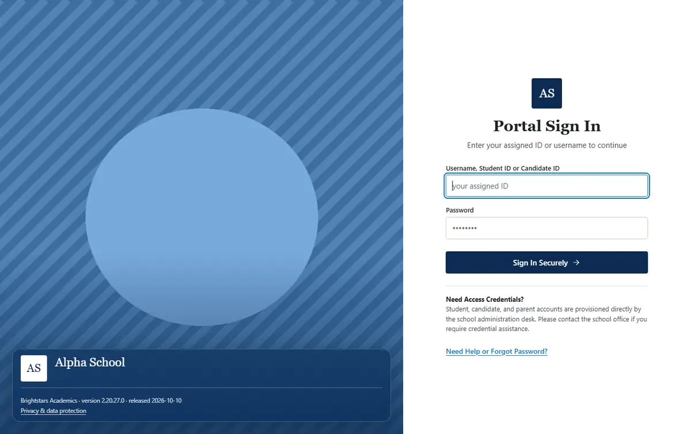
The school's own sign-in page, with its logo, name and up to eight school photographs fading one into the next.
Your own web address, live the moment your school is created, such as yourschool.brightstars…. Use your own domain (for example portal.yourschool.edu.ng) whenever you're ready.
Your logo, name, motto and tagline on the portal, report cards and receipts.
Your two brand colours on menus, headers, buttons and the sign-in page. A colour too light to read is refused automatically, so the portal always stays legible.
Up to eight photographs of your school on the sign-in page.
Messages from your own accounts. Email and SMS go out under your school's name, so parents know who is writing.
Your own numbering. You decide how admission numbers and candidate codes look, for example ABC/2026/0143.
Three schools, one platform
Each school appears in its own colours, on its own address. Sample names.
Installs as an app
Parents, students and staff can install the portal on a phone, tablet or computer. The app icon is your logo and the app name is your school. No app-store listing needed.
Candidates sit their papers on a computer with a countdown clock. When they finish, every paper is already marked and the ranking is already done. No scripts to collect, no marking marathon, no calculator.
What a candidate sees: one question at a time, a server-kept clock, and a map of answered questions.
Marked instantly. No arithmetic mistakes and no lost scripts. Rankings by subject and overall are ready the moment the last candidate finishes.
Fair by design. Each candidate gets the questions in a different order. The clock is kept by the server, not by the candidate's device, so nobody can stop time.
Nothing lost mid-exam. Every answer is saved as the candidate presses Save & Next. If power or the network drops, the candidate carries on where they were, and up to five minutes of lost time is given back.
Start with ours, or bring yours. Every school starts with 255 standard questions (Mathematics, English and General Knowledge for Year 7/JSS 1 and SSS 1), checked by an independent reviewer. Import your own banks whenever you like.
SSS departments. SSS 1 candidates choose Science, Art or Commercial when they register.
Exams can't be changed after they're sat. Each attempt keeps its own copy of the questions, and banks can be locked during a live exam.
Retakes when needed, granted by authorised staff, and results exported to CSV.
A free practice link that markets your school
Families visit your school's own practice page with no sign-up, choose the class they're aiming for, and practise. Questions come from last year's paper or a practice bank you set. The paper about to be sat is never shown. Every family who practises meets your school's brand first.
yourschool…/entrance-practice → Year 7 / JSS 1 → Year 10 / SSS 1
Entrance exam day, before and after
BRIGHTSTARS ACADEMICS · SCHOOL PLATFORM GUIDE07
Brightstars Academics06 · Admissions
Admissions & class placement
From ranked waitlist to enrolled student in one decision.
Every candidate who sits at least one paper joins a waitlist ranked by overall percentage. Your admissions officer admits or declines from there, and one click creates everything a new student needs.
Decisions stay private
Admitting a candidate doesn't show them a score. An admin must release the result before the candidate sees their outcome or new login.
The right person decides
Only the Admissions Officer role sees the waitlist by default, and it can be limited to one entry level. Admitting is final. Declining can be undone.
Balanced classes, automatically
Split JSS and SSS classes into arms such as JSS 1A, 1B or SS 1A (Science). New students go to the arm with the fewest students.
Class transfers with approval
A class teacher can ask to move a student to another arm, or in SSS to another department. Nothing changes until the receiving class teacher (or the head) approves it.
Three ways in, one record
Students arrive by entrance exam, by registering one at a time, or by bulk import from your existing spreadsheets. All three produce exactly the same record.
Even class sizes without spreadsheets
Placement happens automatically when a class is split, when a student is added and when a candidate is admitted. In SSS, an arm tied to a department only takes students from that department.
BRIGHTSTARS ACADEMICS · SCHOOL PLATFORM GUIDE08
Brightstars Academics07 · Results & report cards
Results & report cards
From marks to report card, with nobody chasing.
Teachers enter marks. The system adds them up, holds each result until the right person has checked it, and builds the report card the moment a child's term is complete.
Illustration of a term report card, available as a page and as a PDF.
Continuous assessment (40) plus exam (60), added up the same way for every child, with grade and remark.
Different people check each step, so mistakes are caught before a parent ever sees them.
Never incomplete. A card appears only when every result for the term is released, so it never shows a missing mark.
Signed and branded: your logo and colours, the class teacher's comment and signature, the head's signature, the class average, trait ratings and next-term date.
A whole class in one PDF to print, or each card alone.
Parents told for you by email, SMS and in-app alert the moment the card is ready.
How every subject is scored
The grading key printed on every card
BRIGHTSTARS ACADEMICS · SCHOOL PLATFORM GUIDE09
Brightstars Academics08 · The overview
For the proprietor and head
The whole school at a glance.
Open the portal and the Overview answers the questions a school leader asks every morning. How are we doing this term compared with last? Who has no class teacher? How many results are ready to release? How full is the register?
yourschool · Overview
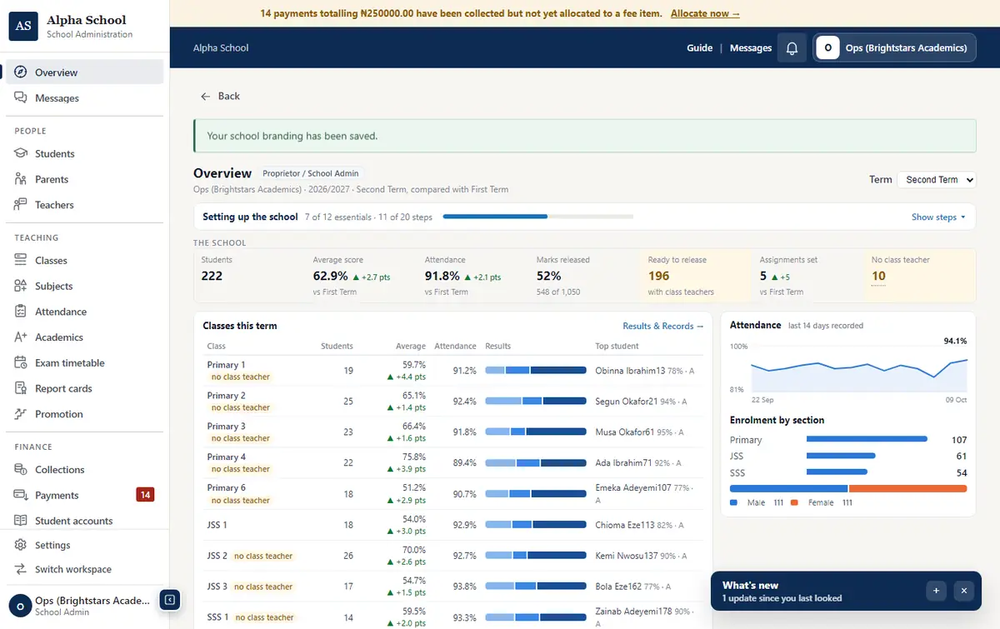
The Overview of a demonstration school ("Alpha School"). All names and figures are sample data.
Term against term
Average score, attendance, marks released and work set, each compared with the previous term, with ▲ or ▼ showing which way it moved.
What needs attention
Results waiting to be released, classes with no class teacher and unallocated payments are flagged, so nothing is left sitting.
Every class in one table
Students, average, attendance, a results bar and the top student for every class, plus the attendance trend and enrolment by section.
✓
A setup checklist guides new schools."Set up your school" walks you through classes, subjects, students and fee items, and ticks each step off by reading your own data. You always know what's left to do.
BRIGHTSTARS ACADEMICS · SCHOOL PLATFORM GUIDE10
Brightstars Academics09 · Teaching & learning
Day to day
Teaching, attendance and timetables.
The ordinary business of a school day, done in minutes instead of hours, and visible to the families who care about it.
01
Assignments
Teachers set work, students answer online, and marks come back without anyone re-typing them.
02
Class projects
Written or quiz-style, for one student or a whole class, graded with the same care.
03
Tests & exams
The same timed, auto-marked engine as the entrance exam, used for everyday classwork.
04
Practice
Retake as often as you like, in a new order every time. Never counted towards grades.
yourschool · Attendance
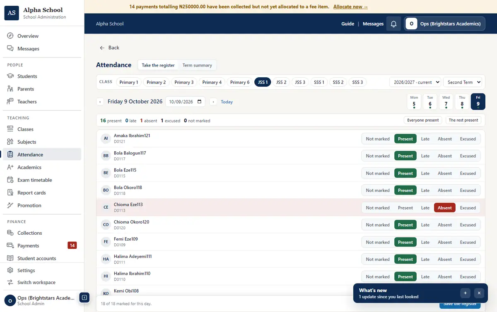
Taking the register: one tap per child, or "Everyone present" and adjust. Demo data.
Attendance in moments
Present, late, absent or excused for the whole class, once a day.
Term summaries per class, with percentages.
Parents and students see the day-by-day record on their own dashboard.
Timetables, released together
Build the exam or test timetable as a private draft and edit it freely.
Release it once and every affected student and parent is told by email, SMS and in-app alert at the same moment.
Families download it as a PDF or print it.
Built for Nigerian schools
Crèche, Nursery, Primary, JSS and SSS, with Science, Art and Commercial departments. Subjects can be set for each department.
Early years done right
Crèche and Nursery pupils don't need logins. Teachers record scores and parents still see fees, results and report cards.
Nothing lost or counted twice
Answers are saved when a student presses Save & Next, so a dropped connection or stray tap never loses or doubles a response.
One release, everyone told
BRIGHTSTARS ACADEMICS · SCHOOL PLATFORM GUIDE11
Brightstars Academics10 · Fees & receipts
Finance
Always know who has paid, and who hasn't.
Set fees once by class and term, charge students in a few clicks, and watch collections come in live. Every payment produces a receipt in your colours that reaches the parent by itself.
yourschool · Finance · Collections
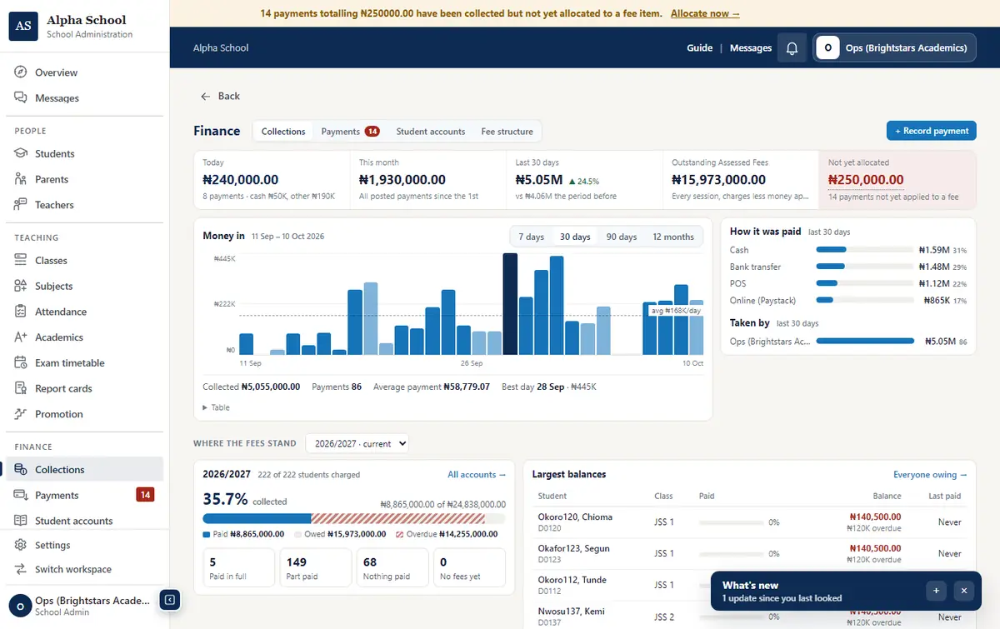
Collections for a demonstration school: money in by day, payment method mix, how much of the session's fees is collected, and the largest balances. Sample figures.
Fees set once, by class: tuition, uniform, transport and more, per class and term.
Balances always to hand: paid, part paid or unpaid, per fee and per child, including arrears from earlier sessions.
Cash, transfer, POS or online, all recorded in one ledger.
Mistakes are corrected, not hidden. A wrong payment is voided with a reason and stays on record.
Unallocated money is flagged until it's applied to a fee.
BRIGHTSTARS ACADEMICS · SCHOOL PLATFORM GUIDE12
Brightstars Academics11 · Online payments
Pay fees online
Parents pay from their phone, straight into your account.
Connect your school's own Paystack account and parents can pay any amount up to what they owe by card, bank transfer or USSD. The money goes directly to your school. Brightstars never holds it.
Example: how a demonstration school was paid, last 30 days
Sample data from the demo school shown on the previous page. Every channel lands in the same ledger and produces the same receipt.
Safe by design
Your own Paystack account. No shared platform account and no middleman holding your money.
Never trusted from a browser. Every payment is confirmed by asking Paystack directly, even if the parent closes their phone mid-payment.
A double-tap never charges twice. Repeated clicks return to the same checkout.
Your keys are encrypted and never shown again once saved. Only the School Admin can connect the account.
Pay one fee or several at once, and buy from the school store too.
One fee or all at once
Parents can pay a single fee, part of a balance, or several fees together in one checkout.
Confirmed even if they close the app
Paystack also notifies the school directly, so a payment is recorded even if the parent closes their browser first.
Same receipt, same ledger
An online payment looks exactly like one recorded in the office, with the same branded receipt and balance update.
Less cash in the office. Faster collections.
Parents who can pay from their phone at 9pm don't need to queue at the bursar's window at 9am.
BRIGHTSTARS ACADEMICS · SCHOOL PLATFORM GUIDE13
Brightstars Academics12 · Parents & students
For families
Parents stay informed without phoning the office.
One parent login covers every child. Fees, results, report cards, attendance, timetables, messages and the store are all on their phone, in your school's colours.
What parents get
Every child in one table, showing what each owes, their average and attendance.
Results and report cards the moment they're released, ready to download.
Fee account by session, with receipts and online payment.
Attendance history and the exam timetable.
Two-way messages with the school.
The school store, with collection texts when an item is picked up.
What students get
Assignments, projects, tests and exams with due dates and scores.
Unlimited practice tests that never count against them.
Their own timetable, attendance and report cards.
Sent automatically, in your school's name
When…
In-app
Email
SMS
A payment is recorded
●
● + PDF
●
A report card is ready
●
●
●
A timetable is released
●
●
●
A new fee is charged
●
●
●
New school work is set
●
●
–
SMS is used only where it matters, which keeps your SMS credit costs down.
"Are the results out?" "What do I still owe?" The answers are on the parent's phone before they think to call.
Messages, not missed calls
Parents and staff exchange messages inside the portal, and a conversation the school starts reaches the parent by SMS too.
BRIGHTSTARS ACADEMICS · SCHOOL PLATFORM GUIDE14
Brightstars Academics13 · Store & library
Beyond the classroom
The school store and the library, included.
Uniforms, books, bags and stationery, sold and tracked in the same portal. The library knows every book, copy and loan.
yourschool · Parent portal · Store
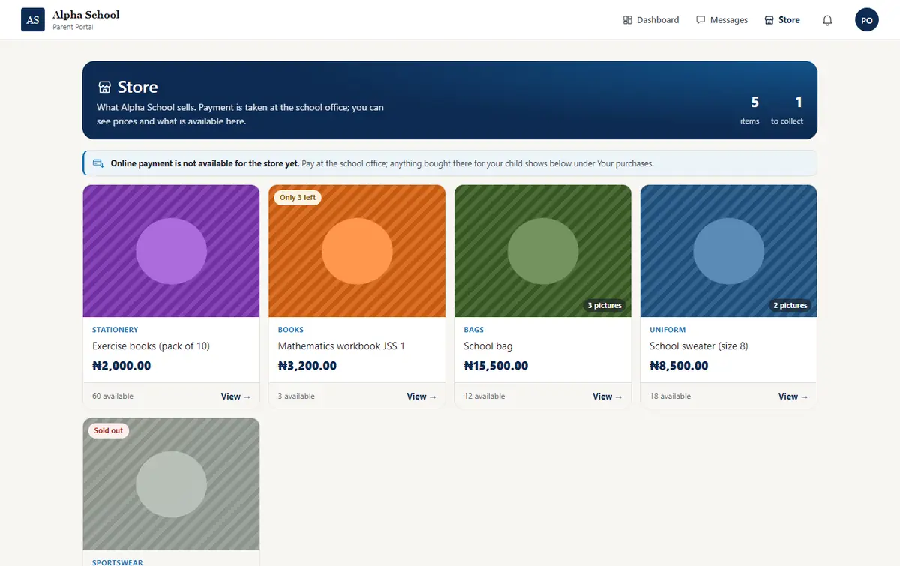
The store as a parent sees it, with prices, stock and "only 3 left" or "sold out" labels. Demo data and placeholder pictures.
School store
Inventory with prices, stock levels and up to three pictures per item.
Parents browse and buy for any child, online where the school accepts it.
Cash, transfer and POS sales recorded at the counter, with receipt.
Stock goes down by itself. Low-stock and sold-out items are flagged.
Hand-over records who collected the item and texts the parent.
Sales this month vs last, weekly sales and best sellers on the Overview.
A ready-made Store Keeper role.
Library
A catalogue of every book and each of its copies.
Lend to a student or a member of staff in a couple of clicks.
See what's out, who has it, and what's overdue.
Record returns so nobody has to remember who has what.
A ready-made Librarian role.
Why it matters: fewer lost books, less cash handled informally, and money from the store that is visible and accounted for.
BRIGHTSTARS ACADEMICS · SCHOOL PLATFORM GUIDE15
Brightstars Academics14 · Governance
Staff, roles & accountability
Everyone sees what their job needs, and nothing more.
No single "give them access" switch. Every sensitive action has its own named permission, access follows your school's chain of authority, and every important action is recorded.
Your chain of authority, built in
Example · a subject teacher, limited to SS 2 Mathematics
Activity log · most recent
WHO
ACTION
WHEN
A. Teacher
Entered Mathematics results, SS 2B
09:41
B. Head
Approved Second Term results, JSS 1A
Yesterday
C. Bursar
Voided a payment (duplicate entry)
Mon
100+
named permissions, from "Take attendance" to "Release results"
19
ready-made roles, or build your own from the catalogue
Scope
limit a teacher to the classes and subjects they actually teach
Safe
no one can grant a permission they don't hold themselves
yourschool · Settings · Staff roles
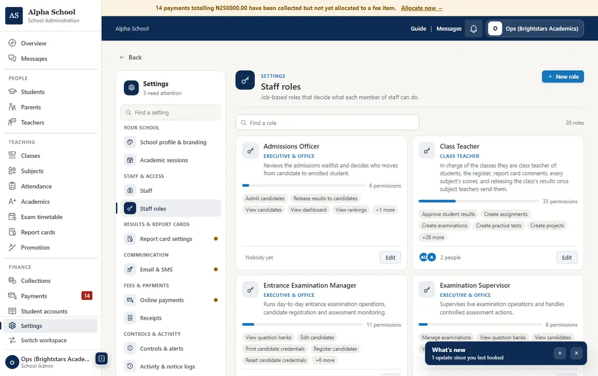
Ready-made staff roles, each describing what it can do and how many permissions it carries. Demo data.
BRIGHTSTARS ACADEMICS · SCHOOL PLATFORM GUIDE16
Brightstars Academics15 · Security
Private by design
Children's information deserves real protection.
Many school systems keep every school's records in one big shared database, separated only by a label. Brightstars is built differently. Every school gets its own private database and its own private files. One school can never see another's records.
Walled off, not filtered
Students, results, fees and photographs live in your school's own database, not as tagged rows in a shared table that one bug could leak.
Careful with passwords
New accounts start with a one-time password that must be changed. Repeated wrong guesses are slowed. Changing a password signs out every device.
Secrets encrypted
Your email, SMS and Paystack credentials are encrypted at rest, never shown again once saved, and kept out of activity logs.
Parents see only their children
A parent's login opens their own children's records and nothing else. A login from one school doesn't work at another.
Exams survive hiccups
Answers are saved as they're given and time is kept by the server. A restart doesn't throw a candidate out.
NDPR-aligned
A published data-protection statement aligned with Nigeria's NDPR, linked from every school's sign-in page for parents and staff.
Archived, never lost.Students who leave are archived, not deleted. Their full history, class placements and results by term stay available to the School Admin and can be restored at any time.
BRIGHTSTARS ACADEMICS · SCHOOL PLATFORM GUIDE17
Brightstars Academics16 · How we compare
Already using something?
Here's what changes when you move.
You may already have school software, or a mix of spreadsheets and habits. Here is how Brightstars compares with what schools commonly use today.
Paper & spreadsheets
Typical shared school software
Brightstars Academics
Look and feel
Whatever the office prints
Vendor's name and colours
Your name, logo, colours, address and app icon
Where records live
Files, books, laptops
One shared database with other schools
Your school's own private database
Entrance exams
Paper scripts, hand marking
Often a separate tool or add-on
Built-in CBT, instant ranking, free practice page
Admissions
A list re-sorted by hand
Students re-typed after the exam
Ranked waitlist, admit in one click, family logins created
Results
Formulas and retyping
Entry, often without sign-off
Entered, verified, approved, released
Report cards
Built one child at a time
Generic template
Branded, signed, with class averages, ready on release
Fees & receipts
Receipt books and a ledger
Receipts printed on request
Branded receipts sent by email and SMS by themselves
Online payment
Bank slip brought to office
Often via the vendor's account
Straight into your own Paystack account
Telling parents
Calls and notice boards
Manual broadcasts
Automatic email, SMS and in-app, from your accounts
Who sees what
Whoever holds the file
A few broad admin levels
100+ permissions, class-scoped, fully logged
Store & library
Separate notebooks
Rarely included
Both included, linked to parents and payments
Nigerian structure
Adapted by hand
Often foreign defaults
Crèche to SSS, departments, Naira, BulkSMS Nigeria
Getting started
Never really "set up"
Weeks of configuration
Live address on day one, spreadsheet import, guided checklist
fully covered partly or sometimes not covered. The first two columns describe common situations, not any particular product. Your current setup may already do some of these things well.
BRIGHTSTARS ACADEMICS · SCHOOL PLATFORM GUIDE18
Brightstars Academics17 · Why Brightstars
Why schools choose us
Ten reasons your school needs Brightstars.
1
It's your brand, not ours
Parents see your school on every screen, receipt and report card, and as the app on their phone.
2
Your data is truly yours
A private database for your school alone, exportable in full whenever you need it.
3
Admissions to graduation in one system
From entrance exam to report card, nothing is typed twice.
4
Fees collected faster
Live balances, automatic receipts and online payment straight to your account.
5
Fewer phone calls
Parents get results, receipts and timetables automatically.
6
Results you can trust
Four-step sign-off before anything reaches a parent.
7
Accountability built in
Precise permissions and an activity log answer "who did this?".
8
Made for Nigerian schools
Crèche to SSS, departments, Naira, Paystack and local SMS.
9
A marketing tool too
A public entrance-practice page brings prospective families to your brand.
10
Always improving
Regular releases, announced in-portal with a "What's new" card for each audience.
A better day for each person
Proprietor & head
Whole school at a glance
Control who does what
Know who did what, and when
Sign once, for every report card
Teachers
Set work and quizzes online
Marks add up on their own
Register in moments
See only their own classes
Bursar & office
Record a payment in a minute
Receipts sent automatically
Every balance, always current
Far fewer parent calls
Parents & students
Everything on their phone
Pay fees from anywhere
Practise without limits
Message the school directly
Stand out to families at admission time.
Parents now expect results, receipts and updates on their phone. Brightstars gives your school a modern portal under its own name.
Book a walkthrough →
BRIGHTSTARS ACADEMICS · SCHOOL PLATFORM GUIDE19
Brightstars Academics18 · Getting started
Getting started
From "yes" to your first class online, in four steps.
No servers to buy and no software to install. Your portal works in any modern browser, and we set it up with you.
Bring your records with you
Move from spreadsheets in three guided steps. Every import is checked line by line. Bad rows are reported by line number and the good rows still go in.
A checklist that guides you
The "Set up your school" card ticks off each step as you complete it.
Review your classes (pre-seeded for you)
Add subjects
Enrol students
Set up fee items
Open the school store (optional)
A staff guide with pictures
A plain-language guide inside the portal, with screenshots and a link to every page it describes.
"What's new," for everyone
Staff, parents and students each see a short note about improvements that matter to them.
Exams from day one
The standard entrance papers are set up in one click, so your first entrance exam can run immediately.
All you need
No new hardware
A device and a browser
Any phone, tablet, laptop or desktop with a modern browser.
Your existing records
Student lists and past results in a spreadsheet, if you want to bring history across.
Your branding
Logo, colours, motto and a few photographs of the school.
BRIGHTSTARS ACADEMICS · SCHOOL PLATFORM GUIDE20
Brightstars Academics19 · Questions
Questions
Things schools ask us.
Do our staff need to be technical?
No. Staff use ordinary web pages, and each person sees only the screens that matter to their job. We set up your school with you, and you can change your colours, logo and roles yourself afterwards.
Can we use our own web address?
Yes. Your school gets an address the moment it's created, and it keeps working. To use your own domain as well, you add one simple record with your domain provider and we connect it.
Will messages come from us or from Brightstars?
From you. Once you connect your school's accounts, emails and texts are sent from them. The Brightstars logo is never shown on your portal.
What if something goes wrong on exam day?
Each answer is saved as the candidate presses Save & Next, and the clock is kept by the server. A candidate mid-paper carries on where they were, even after a restart, and a retake can be granted.
Do practice tests count towards grades?
Never. Students can practise as often as they like, the questions come in a new order each time, and nothing they do in practice is recorded.
Can parents pay online?
Yes, once you connect your school's own Paystack account. Parents pay any amount up to what they owe, by card, transfer or USSD, straight to your account. Office payments work exactly the same either way.
Can different staff have different access?
Yes. You choose what each role can do and can limit a teacher to their own classes and subjects. Nobody can give someone more access than they have themselves.
Can we bring our own questions and records?
Yes. Import your own question banks, and bring students, enrolment history and past results in from spreadsheets.
Does it work on phones?
Yes. Every portal works on phones, tablets and computers, and can be installed as an app with your school's logo.
What happens to students who leave?
They're archived, not deleted. Their sign-in stops, but their full record stays available and can be restored. Parents keep access to their fee account.
Can a school be paused?
Yes. A school can be suspended and reactivated independently. Its data is untouched and it returns exactly where it left off.
Who owns our data?
You do. Your records sit in your school's own database, and a complete export of your database and files can be produced at any time.
What does it cost?
Talk to us. We'll look at the size of your school and what you need, and give you a clear answer with no hidden extras.
Still have a question?
We'll answer it on a walkthrough, using your school's own name and colours.
Talk to us →
BRIGHTSTARS ACADEMICS · SCHOOL PLATFORM GUIDE21
Part two · In depth
Features in full.
Every part of a Brightstars school portal, one page each: what it does, a real example from school life, who uses it and why it matters. Written for school leaders, not engineers.
01Signing in, workspaces and the app23
02The Overview: a dashboard for every role24
03Students: every record in one place25
04Bulk import: bring your records with you26
05Parents and families27
06Teachers and teaching duties28
07Classes, departments, subdivisions and transfers29
08Subjects, sessions and terms30
09Attendance31
10Assignments and projects32
11Tests, examinations and practice33
12Results and offline scores34
13Report cards35
14Promotion to the next session36
15Exam and test timetables37
16Fee structure and billing38
17Recording payments and receipts39
18Student accounts and collections40
19Online payments and refunds41
20The school store42
21The library43
22Messages, notifications and reminders44
23Staff accounts45
24Roles, permissions and limits46
25Settings, branding and connections47
26Activity and notice logs48
27Candidates and credentials49
28Question banks and entrance practice50
29Exam day, results and rankings51
30Admissions and department advice52
31The student portal53
32The parent portal54
33The candidate portal55
34Help built in56
Brightstars AcademicsFeatures · 01
Feature 01 · Getting in
Signing in, workspaces and the app
Everyone in your school community signs in at the same address, your school's own, and lands exactly where their job begins. No app store, no installation CD, no IT department needed.
yourschool · demo data
A real screen from the demonstration school. All names and figures are sample data.
1
address for staff, students, parents and candidates
30 min
a reset link works once, then expires
0
app stores or installs needed
What you can do
One sign-in page for everyone. Staff, students, parents and entrance candidates all use the same page. They type the ID or username they were given, and the portal works out who they are.
A one-time password to start. Every new account begins with a temporary password, and the person must choose their own the first time they sign in.
Forgot your password? A reset link goes to the email the school has on file. It works once, for 30 minutes.
Two workspaces. The School Portal runs the school year. Entrance Examination runs admissions season. Staff with both choose on Workspace Home and switch with one click. Everyone else goes straight to theirs.
Installs like an app on Android, iPhone, tablets and computers, carrying your school's name and logo as the icon.
Always shows it is working. When you open a page, a soft outline and spinner show until the next page is fully ready, so nobody taps twice on a slow connection.
Back always makes sense. The Back button returns to where you were, and never past the Overview.
Example
Mrs Okafor, a parent, taps Install on the bar at the bottom of her phone screen. From then on, your school's crest sits on her home screen beside WhatsApp, and one tap opens her children's fees and results.
Who uses it
Every staff memberStudentsParentsCandidates
Why it matters
A school portal only works if people actually use it. Signing in takes seconds, and the app on a parent's phone keeps your school one tap away.
BRIGHTSTARS ACADEMICS · SCHOOL PLATFORM GUIDE23
Brightstars AcademicsFeatures · 02
Feature 02 · Getting in
The Overview: a dashboard for every role
The first page each person sees is built for their job. The bursar sees money, a class teacher sees their class, and the proprietor sees the whole school. Nobody wades through screens that aren't theirs.
yourschool · demo data
A real screen from the demonstration school. All names and figures are sample data.
10
role-specific views, from bursar to librarian
▲▼
every figure compared with the last period
1 page
to know what needs attention today
What you can do
Proprietor and School Admin: the whole school this term, marks waiting to be released class by class, classes with no class teacher, and the top student in every class.
Head teacher: the same whole-school picture, without the setup tasks.
Class teacher: whether today's register is taken, marks ready to release, marks subject teachers haven't sent yet, and report card comments still to write.
Subject teacher: each class's average against last term and the school, the spread of scores, who needs support, and work waiting to be graded.
Bursar: today's, this month's and this session's collections, six months of charts, how money was paid, and the largest balances.
Librarian, admissions officer, secretary and store keeper each get their own figures, from overdue books to candidates awaiting a decision.
Every number is compared with last term, yesterday or last month. ▲ and ▼ show the direction, and yellow tiles flag anything waiting on someone.
Example
Mr Bello, a class teacher, opens the portal at 8am. His card shows that JSS 2's register hasn't been taken, three subject teachers still owe him marks, and Chioma currently leads the class.
Who uses it
ProprietorHead teacherTeachersBursarOffice staff
Why it matters
Leaders stop asking for reports, because the report is the front page. Problems such as unpaid fees, missing marks or an untaken register show up before they grow.
BRIGHTSTARS ACADEMICS · SCHOOL PLATFORM GUIDE24
Brightstars AcademicsFeatures · 03
Feature 03 · People
Students: every record in one place
Every student's details, class, results, work, fees and school journey live in one record that a single click opens.
yourschool · demo data
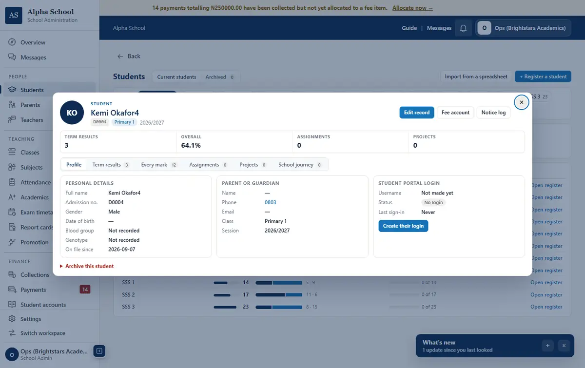
A real screen from the demonstration school. All names and figures are sample data.
6
tabs in every student record
0
admission numbers typed by hand
100%
of history kept when a student leaves
What you can do
Every class at a glance: numbers, boys and girls, and how many students can sign in. Click a class to open its register.
Register a student in one step. This creates the record, places them in a class and gives them a login. The admission number is generated automatically, so it can never clash with another student's.
The student's record opens over the list, with tabs for profile, parent or guardian, term results, every mark, assignments, projects and school journey.
SSS departments. Each SSS student belongs to Science, Art or Commercial, and only sees the subjects their department takes.
Reset a password to a new one-time password, ready to print, or switch a student's sign-in off without touching their record.
Archive, never delete. When a student leaves, archiving keeps their whole history, stops their sign-in at once and removes them from current registers. A School Admin can restore them later.
Notice log: see every email and text sent to the family about that student, and whether it arrived.
Example
A parent calls to say they never got the fee notice. The secretary opens Kemi's record, presses Notice log, and sees the SMS was delivered on 3 October at 10:14, with the email returned because the address had a typo. She fixes the email on the spot.
No more hunting through files and folders. One record answers almost every question about a child.
BRIGHTSTARS ACADEMICS · SCHOOL PLATFORM GUIDE25
Brightstars AcademicsFeatures · 04
Feature 04 · People
Bulk import: bring your records with you
Switching systems shouldn't mean retyping 600 students. Bring them in from spreadsheets in three guided steps, and keep their history too.
3
guided steps: students, history, results
Line-by-line
error report, with good rows still imported
0
duplicates when a file is run twice
How it works, step by step
1Download the template for the step you're on.
2Fill it in from your old system or spreadsheet.
3Upload it. Every row is checked, and problems are listed by line.
4Download the new logins and hand them out.
What you can do
Step 1, Students. Upload names, gender, class and guardian contacts. Each row becomes a full student record with a class place and a login, exactly as if registered by hand.
Step 2, Enrolment history. Bring in each student's past classes: promoted, repeated, graduated or withdrawn. Earlier school years are created automatically when needed.
Step 3, Past results. Bring in results from earlier terms, so report cards and academic records are complete from day one.
Checked line by line. A row with a problem is skipped and reported by line number and reason, and every good row still goes in.
Safe to run twice. A result that's already on record is left alone and reported, so re-uploading a file never doubles anything.
Logins ready to hand out. New usernames and one-time passwords appear once and can be downloaded as a spreadsheet.
Recorded: every import is logged with who ran it, the file name and the counts.
Example
St. Mary's arrives with three Excel files from their old system. By lunchtime, 412 students are enrolled with logins, their past two years of classes are on record, and last session's results already sit on their academic records. Row 88 is flagged for a missing guardian phone number, and that's the only one.
Who uses it
School AdminRecords officerAnyone given 'Run bulk imports'
Why it matters
The biggest barrier to switching is the data you already have. This removes it.
BRIGHTSTARS ACADEMICS · SCHOOL PLATFORM GUIDE26
Brightstars AcademicsFeatures · 05
Feature 05 · People
Parents and families
Every family gets one parent account that covers all their children, linked by the school, so the right people see the right child.
yourschool · demo data
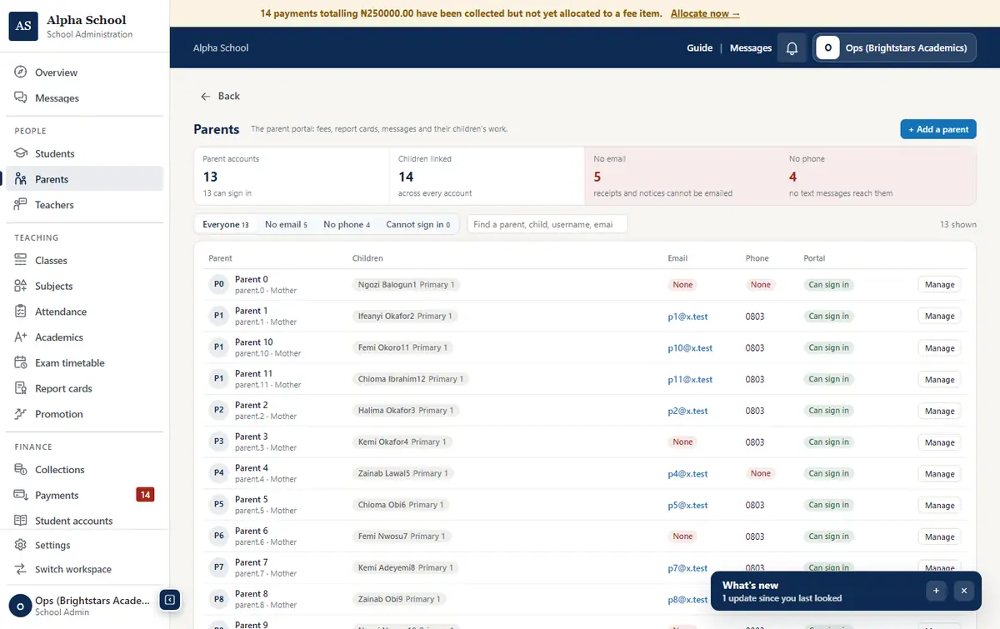
A real screen from the demonstration school. All names and figures are sample data.
1
parent login for all of a family's children
2
warnings: no email, no phone on file
0
self-registered strangers
What you can do
One parent, many children. Siblings share one parent account, so a mother of three signs in once and sees all three.
Created by the school, never by strangers. Parent accounts can't be self-registered, so only the guardians you link can see a child.
Spot missing contacts. The page counts parents with no email or no phone, the families receipts and notices can't reach, so you can fix them.
Fast search by parent, child, username, email or phone.
New password in seconds, shown once and ready to print, when a parent forgets theirs.
Created automatically on admission. Admitting an entrance candidate can create the parent's account from the details already given.
Early years too. Parents of Crèche and Nursery pupils still see fees, scores and report cards, and can pay online.
Example
Mr and Mrs Adeyemi have children in Primary 4, JSS 1 and SSS 2. The school links one parent account to all three. On their phone they see the three children side by side, with what each owes and how each is doing.
Who uses it
SecretarySchool AdminParents
Why it matters
Families who can see everything stop calling to ask. Linking siblings removes the confusion of several logins.
BRIGHTSTARS ACADEMICS · SCHOOL PLATFORM GUIDE27
Brightstars AcademicsFeatures · 06
Feature 06 · People
Teachers and teaching duties
See at a glance who teaches what, and which classes and subjects still have nobody. A teacher's duties then decide exactly what they see.
yourschool · demo data
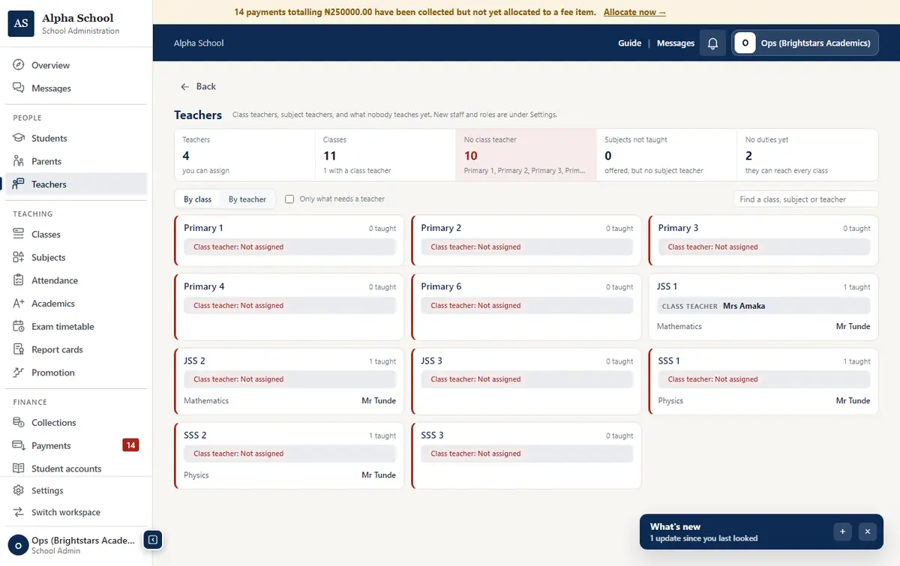
A real screen from the demonstration school. All names and figures are sample data.
2
views: by class or by teacher
Red
flags classes and subjects with no teacher
Only
their own classes on every teacher's screen
What you can do
Gaps shown in red: classes with no class teacher, and subjects offered but taught by nobody.
Two views.By class lists each class with its class teacher and subject teachers. By teacher lists each person with everything they teach.
Class teacher duties. A class teacher takes the register, writes report card comments and releases the class's results.
Subject teacher duties. A subject teacher teaches chosen subjects in chosen classes, and in SSS can be limited to one department.
Duties shape every screen. Once set, a teacher's student lists, subject choices, results and work pages show only their own classes.
Head teachers can assign duties to staff below them, in the classes they look after.
Change duties in a pop-up, without leaving the page.
Example
Mr Tunde teaches Mathematics in JSS 1 and JSS 2, and Physics to Science students in SSS 1. When he opens Results, he sees exactly those three groups and nobody else's marks.
Who uses it
School AdminHead teacher
Why it matters
Teachers see a clean, short list instead of the whole school. Leaders can see staffing gaps before term starts.
BRIGHTSTARS ACADEMICS · SCHOOL PLATFORM GUIDE28
Brightstars AcademicsFeatures · 07
Feature 07 · Teaching
Classes, departments, subdivisions and transfers
The platform already knows how a Nigerian school is arranged. Split big classes into arms, balance them automatically, and move students between arms with proper approval.
16
classes ready, Crèche to SSS 3
3
SSS departments: Science, Art, Commercial
Auto
balancing of arms by class size
How it works, step by step
1Switch on the classes your school runs.
2Split large JSS or SSS classes into arms and lock them.
3Give each arm its class teacher.
4Students are balanced automatically. Transfers need approval.
What you can do
Ready from day one: Primary 1–6, JSS 1–3 and SSS 1–3 are already set up. Rename, reorder or add classes to match your school.
Crèche and Nursery 1–3 are there, switched off until you need them. Their pupils don't sign in, but teachers record scores and parents still see fees and report cards.
SSS departments: Science, Art and Commercial. Each subject lists the departments that take it, so students only see what applies to them.
Class subdivisions such as JSS 1A and JSS 1B, JSS 2 Gold, or SS 1A (Science), each with its own class teacher. Lock them once they're set.
Automatic balancing: new, imported and admitted students join the arm with the fewest students.
Class transfers with approval: a class teacher asks to move a student. Nothing changes until the receiving class teacher, or the head, approves.
Removing an arm moves its students into the others automatically.
Example
JSS 1 has 72 students. The School Admin creates JSS 1A, 1B and 1C, and the platform places 24 in each. In week three, Mrs Eze asks to move Tobi to 1C to sit with his twin. Mr Obi, 1C's class teacher, approves, and Tobi appears on his register that afternoon.
Who uses it
School AdminHead teacherClass teachers
Why it matters
Large schools get tidy, even classes and a proper record of every move, with no spreadsheets and no arguments.
BRIGHTSTARS ACADEMICS · SCHOOL PLATFORM GUIDE29
Brightstars AcademicsFeatures · 08
Feature 08 · Teaching
Subjects, sessions and terms
Set up what each class studies and the shape of your school year once. Every form, register and report then follows it.
1
subject attached to many classes at once
3
terms per session, plus Full Session
Locks
to freeze a subject while results are finalised
How it works, step by step
1Create each subject and tick the classes that take it.
2For SSS, tick the departments that take it.
3Set the current session and its release date.
4Lock subjects once the term's results are final.
What you can do
Subjects as a list or a grid of subjects against classes, so a class missing a subject stands out.
One subject, many classes: attach Mathematics to every class in one go.
Departments per subject: tick Science for Physics, Art and Commercial for Literature, or nothing for a subject everyone takes.
Locks: lock a subject for a class once its results are being finalised, so nothing changes by accident. The School Admin applies the final lock.
Academic sessions (school years, such as 2026/2027). One is always current, and new enrolments, results, fees and attendance are filed against it.
Terms: First, Second and Third Term, or Full Session for the year as a whole.
Release dates: set a session's release date, and results release themselves on the day.
Example
The head sets 2026/2027 as the current session in August. From that moment, every new register, fee and result is filed under it automatically, and last year's records stay exactly as they were.
Who uses it
School AdminHead teacherAcademic administrator
Why it matters
Set it up once and get clean records year after year, without the 'which spreadsheet is this year's?' confusion.
BRIGHTSTARS ACADEMICS · SCHOOL PLATFORM GUIDE30
Brightstars AcademicsFeatures · 09
Feature 09 · Teaching
Attendance
Take the register in under a minute. Parents can see the record the same day.
yourschool · demo data
A real screen from the demonstration school. All names and figures are sample data.
1 tap
per child, or everyone present in one
4
marks: present, late, absent, excused
Same day
visible to parents
What you can do
One tap per child: Present, Late, Absent or Excused, once per day.
Shortcuts:Everyone present and The rest present handle a normal day in seconds.
The school week at a glance: a green dot shows each day whose register was taken. Arrows step back or forward a day.
Nothing assumed. A child left blank simply has no mark, and the system never pretends they were present.
Who marked it. Each mark records who last changed it.
Term summaries show totals and a percentage for every student, counting late as present.
Arms respected: the class teacher of JSS 1A sees and marks only JSS 1A.
Families see it too: students and parents see a day-by-day history and a term summary.
Example
At 7:50am Miss Ade opens JSS 1A on her phone, taps Everyone present, then marks Chioma absent. By break time, Chioma's mother can see the absence in her parent portal.
Who uses it
Class teachersHead teacherParentsStudents
Why it matters
Attendance stops being a paper book that nobody reads and becomes a record parents can see and leaders can act on.
BRIGHTSTARS ACADEMICS · SCHOOL PLATFORM GUIDE31
Brightstars AcademicsFeatures · 10
Feature 10 · Teaching
Assignments and projects
Set homework and projects online, collect answers online, and mark without retyping. Every mark flows into the term result automatically.
2
assignment formats: written or auto-marked quiz
Whole class
or chosen students, in one step
0
marked work that can be deleted by accident
How it works, step by step
1Choose the class and subject.
2Add the title, dates and instructions, and the questions for a quiz.
3Send it to the whole class or chosen students.
4Mark it, or let the quiz mark itself. CA updates automatically.
What you can do
Guided forms ask one thing at a time: class and subject, then details and dates, then the format, then who receives the work.
Written or quiz. An assignment can be written work you mark by hand, or an on-screen quiz marked automatically, timed or not.
Whole class or chosen students. Whole-class work also reaches students who join the class later.
Projects for longer practical tasks: a model, a report, a garden. Record completion, a score and a remark once you've seen the work.
Every answer in one view: open an assignment to see each student's answer or score.
Protected marks. Work that has marks can't be deleted, so a report card always adds up. Unmarked work can be deleted and restored later.
Families told automatically when work is set and when it is marked.
Example
Mrs Nwosu sets a 10-question Basic Science quiz for all of JSS 2, due Friday. Students take it on their phones, and the scores are in her list before she gets home. Their parents saw an alert the moment it was set.
Who uses it
Subject teachersClass teachersStudentsParents
Why it matters
Less marking, no lost exercise books, and continuous assessment that adds itself up.
BRIGHTSTARS ACADEMICS · SCHOOL PLATFORM GUIDE32
Brightstars AcademicsFeatures · 11
Feature 11 · Teaching
Tests, examinations and practice
The same computer-based exam engine that runs your entrance exam also runs everyday class tests and end-of-term examinations, marked the moment students finish.
4
options per question, marked instantly
∞
practice retakes, never counted
Separate
permissions for tests and exams
How it works, step by step
1Create the test or exam and its time allowed.
2Add questions in the pop-up, one after another.
3Open it to students when it's ready.
4Scores arrive marked, ready to send to the class teacher.
What you can do
Tests and Examinations work the same way, but sit on separate lists with separate permissions, so you decide who sets each.
Question editor in a pop-up: add a question, an optional picture and instruction, four options and the marks, then go straight on to the next question.
Reorder questions with arrows, edit in place, and see the total marks and time per question as you build.
Draft until ready: a paper stays hidden until you open it to students, and it needs at least one question first.
Timed and automatically marked, with the clock kept by the system.
Practice tests that students can retake without limit, in a new order every time, with answers shown afterwards. Practice is never recorded and never counts.
Department-aware: SSS students only see tests for subjects their department takes.
Example
Mr Ibrahim builds a 30-question Second Term Mathematics examination for SSS 1 Science. 41 students sit it at 9am, and by 10:05 every script is marked and the scores are waiting for him to send to the class teacher.
Who uses it
Subject teachersHead teacherStudents
Why it matters
Hours of marking become minutes. Students get unlimited practice for free, and grades stay honest.
BRIGHTSTARS ACADEMICS · SCHOOL PLATFORM GUIDE33
Brightstars AcademicsFeatures · 12
Feature 12 · Teaching
Results and offline scores
Marks from tests, assignments, projects and paper exams all follow one route. The subject teacher records, the class teacher releases, and nothing reaches a parent until it's checked.
40 + 60
continuous assessment plus exam
4
stages: entered, verified, approved, released
1 click
to release a whole class that is ready
How it works, step by step
1The subject teacher enters or collects scores.
2They send them to the class teacher.
3The class teacher checks, or sends a mark back.
4Release, and report cards and parent alerts follow.
What you can do
Enter offline scores fast. Work down a class one student at a time, type the test and exam scores, watch the percentage appear, and press Save and next.
Absences recorded, with the reason a student missed a test.
Subject teacher to class teacher. Send one mark, a student's whole term, or the whole class at once.
Send back for correction. A class teacher can return a mark that looks wrong to the subject teacher.
Release with confidence. Release a student's term with one button, or preview a whole class (who is ready, what is waiting) and release everyone ready in one step.
Your own weighting. Continuous assessment out of 40 (split between tests, assignments and projects as your school chooses) plus the exam out of 60.
Always worked out fresh from the marks on record, so totals can never disagree with the marks behind them.
Example
Mrs Bello records SSS 2 Chemistry exam scores from paper scripts in 20 minutes, then presses Send all my results for this class. Mr Adamu, the class teacher, spots that one score is out of 600 instead of 60 and sends it back, and it's corrected before any parent sees it.
Who uses it
Subject teachersClass teachersHead teacher
Why it matters
Fewer wrong grades, no last-minute spreadsheet panic, and a clear trail of who entered and who released every mark.
BRIGHTSTARS ACADEMICS · SCHOOL PLATFORM GUIDE34
Brightstars AcademicsFeatures · 13
Feature 13 · Teaching
Report cards
Professional, signed, branded report cards that build themselves the moment a child's term is complete, ready as a page and as a PDF.
1 PDF
for a whole class, ready to print
0
incomplete cards: one missing mark holds it back
3
alerts to parents: in-app, email, SMS
How it works, step by step
1Teachers write comments and rate traits, even before release.
2Each teacher saves their signature once.
3Results are released by hand or on the release date.
4Cards appear, parents are alerted, and you print the class PDF.
What you can do
Built automatically: when every result for a child's term is released, the card appears for the student, the parent and staff.
Never incomplete: one missing result holds the card back, so a card never shows a gap.
On the card: your logo, colours, address and motto, the student's photo, each subject's CA, exam, total, grade and remark, and the overall percentage and grade.
Class averages, overall and per subject.
Affective and psychomotor ratings such as Punctuality, Neatness, Leadership, Handwriting and Sports, on a five-point scale.
Signatures: each class teacher draws or uploads their own. The head's title (Principal, Proprietress and so on) and signature print on every card.
Whole class in one PDF for printing and filing, plus the next-term start date.
Parents alerted by in-app alert, email and SMS the moment the card is ready.
Example
On the last Friday of term, Mrs Okon releases JSS 3B's results at 2pm. By 2:01, 31 report cards exist, each signed, and parents start receiving texts. She downloads the whole class as one PDF for the file cabinet.
Who uses it
Class teachersHead teacherReport Card OfficerParents
Why it matters
The most stressful week of term becomes a single button. Parents get a document that looks as good as your school is.
BRIGHTSTARS ACADEMICS · SCHOOL PLATFORM GUIDE35
Brightstars AcademicsFeatures · 14
Feature 14 · Teaching
Promotion to the next session
Move the whole school up a class at the end of the year, safely and all at once, with every decision reviewed before anything changes.
yourschool · demo data
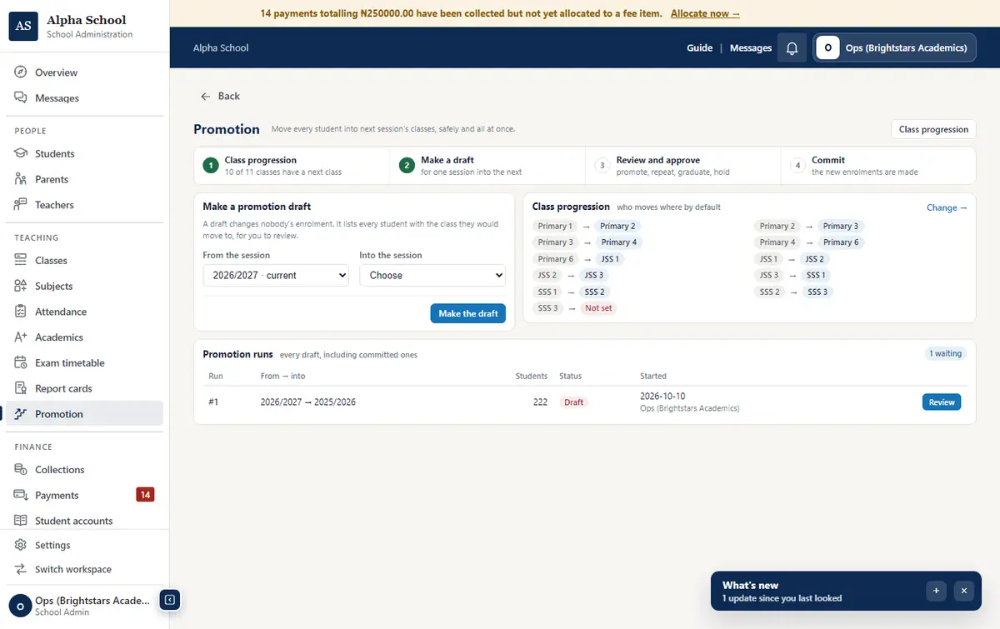
A real screen from the demonstration school. All names and figures are sample data.
Class progression rules, set once: Primary 6 goes to JSS 1, JSS 3 to SSS 1, and so on.
A draft for every student, with the class each would move to already filled in.
Six decisions: promote, repeat, transfer to another class, graduate, hold to decide later, or withdraw.
Batch or one by one. Set a decision for a whole class, then change individual students.
Nothing moves until you commit. Save, review and approve the draft as often as you like.
A permanent record: every promotion run, committed or cancelled, stays readable.
Example
In July the head opens Promotion, makes a draft from 2026/2027 into 2027/2028, marks two JSS 2 students to repeat and SSS 3 as graduating, approves it, and commits. 640 students are in their new classes in one step.
Who uses it
School AdminHead teacher
Why it matters
End-of-year promotion is usually days of error-prone admin. Here it's one careful, reversible process.
BRIGHTSTARS ACADEMICS · SCHOOL PLATFORM GUIDE36
Brightstars AcademicsFeatures · 15
Feature 15 · Teaching
Exam and test timetables
Build the timetable as a private draft, let the system catch clashes, then release it to every student and parent at once.
yourschool · demo data
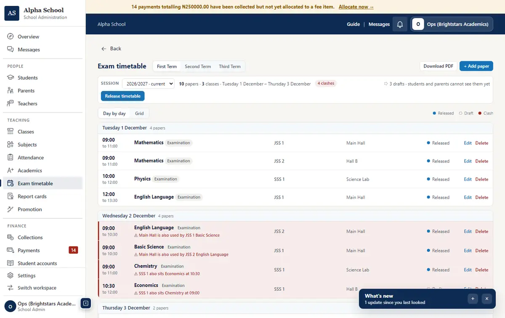
A real screen from the demonstration school. All names and figures are sample data.
Auto
clash detection for classes and halls
1
release notifies every student and parent
PDF
download and print for families
What you can do
Add papers quickly: class, subject, test or exam, date, time and venue. Keep this open lets you enter a whole week without starting over.
Clash detection: a class with two papers at once, or two papers in the same hall, is flagged with what it overlaps.
Two views: day by day, or a grid of days against classes.
Private until released. Students and parents never see a draft.
One release, everyone told, by in-app alert, email and SMS to every affected student and parent.
PDF and print, for staff and families.
A separate permission to release, so you choose who may notify the whole school.
Example
The exams officer enters 48 papers for First Term. The system flags that Main Hall is double-booked on Wednesday at 9am. She moves JSS 2 English to Hall B, releases, and 600 families get the timetable on their phones.
Who uses it
Exams officerHead teacherStudentsParents
Why it matters
No more photocopied timetables with clashes discovered on the morning of the exam.
BRIGHTSTARS ACADEMICS · SCHOOL PLATFORM GUIDE37
Brightstars AcademicsFeatures · 16
Feature 16 · Money
Fee structure and billing
Decide what you charge once, by class, then bill one child or a whole class in a few clicks, without charging anyone twice.
yourschool · demo data
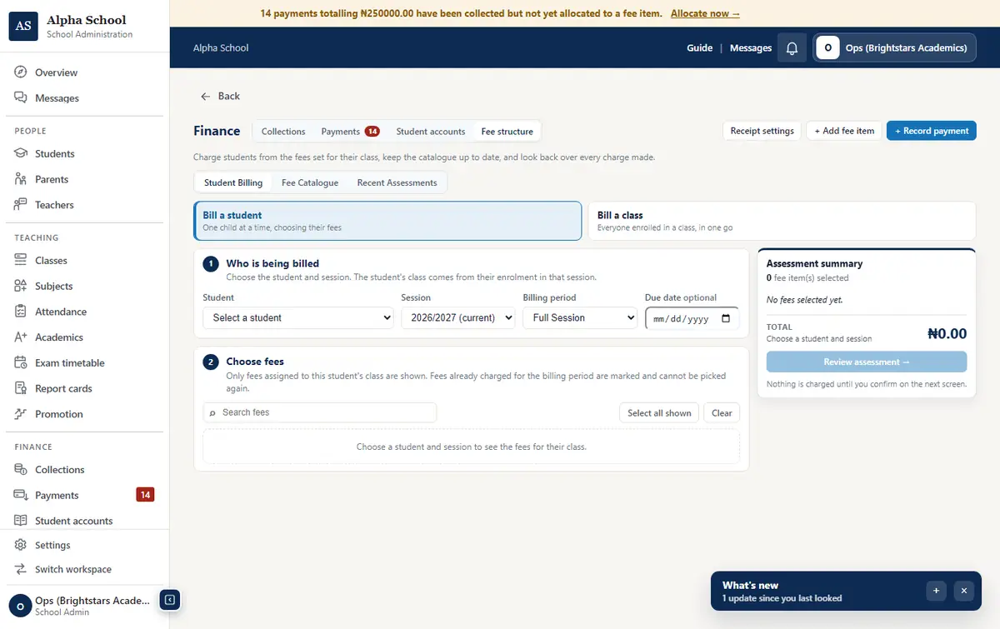
A real screen from the demonstration school. All names and figures are sample data.
5
billing periods: one-off, full session, or each term
Review
before a single naira is charged
0
double charges on a re-run
What you can do
Fee catalogue: tuition, development levy, uniform, transport, PTA, exam fees. Each item is assigned to the classes that pay it.
Billing periods: a one-off charge, a full session, or First, Second or Third Term, with an optional due date.
Bill a student or bill a class. Only the fees assigned to that class are offered.
Review before charging. See how many students, which fees and the total per student before anything is charged.
Batches you can watch. A class is billed in batches, with progress shown. Anyone who couldn't be billed is listed with a reason and a retry button.
Never twice. A student already charged a fee for that period is skipped, so re-running is always safe.
Parents told by in-app alert, email and SMS when a new fee is charged.
Example
The bursar bills all of JSS 1 for Second Term: tuition ₦85,000, development levy ₦10,000, PTA ₦2,500. She reviews the total, confirms, and 72 accounts are charged with parents notified. Her connection drops halfway, so she presses Retry, and only the 9 not yet billed are charged.
Who uses it
BursarFinance ManagerSchool Admin
Why it matters
Billing day stops being a week of manual ledger entries, and double charges stop happening.
BRIGHTSTARS ACADEMICS · SCHOOL PLATFORM GUIDE38
Brightstars AcademicsFeatures · 17
Feature 17 · Money
Recording payments and receipts
Record a payment in under a minute. A numbered, branded receipt reaches the parent immediately, and every naira is accounted for.
yourschool · demo data
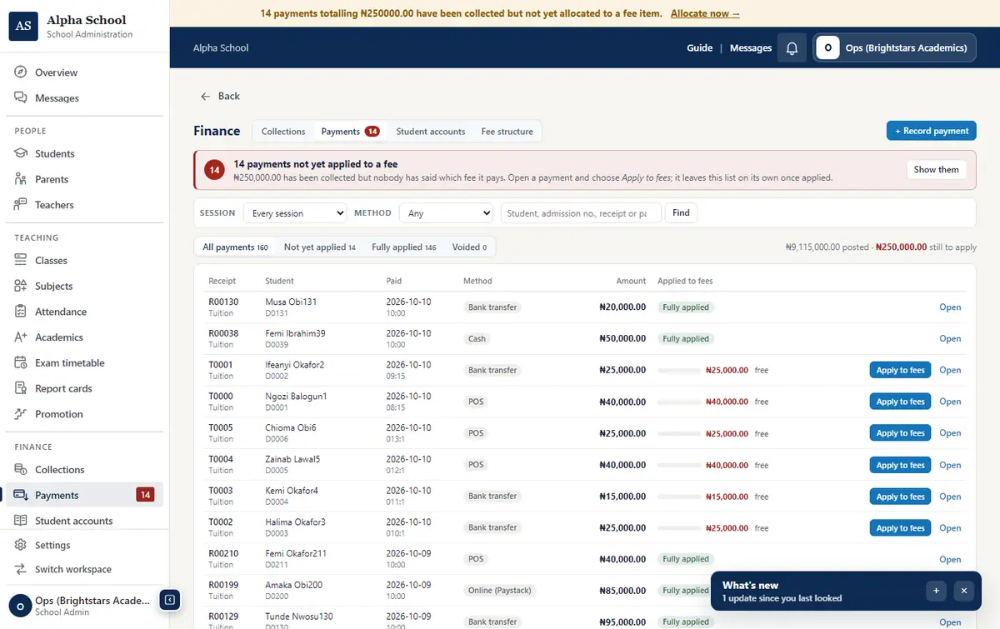
A real screen from the demonstration school. All names and figures are sample data.
< 1 min
to record a payment
3
ways the receipt reaches the parent
Void
with a reason, never delete
What you can do
Quick payment form: find the student as you type, then enter the amount, what it's for, the method (cash, transfer, POS) and a reference.
Instant receipt, numbered and branded, with your logo, colours, signature, the bursar's note and the balance still due.
Automatic delivery: in-app alert, email with the PDF attached, and SMS.
Apply to fees: say which charges a payment covers. Fill oldest first clears the oldest debts until the money runs out.
A banner that won't go away while any payment isn't yet applied to a fee, so money is never quietly forgotten.
Void, never delete. A wrong entry is voided with a reason and stays on record.
Resend any receipt by email or SMS, or print it again, at any time.
Your receipt numbering: choose your own prefix, once, for the whole school.
Example
Mr Eze pays ₦50,000 in cash at the bursary. Before he reaches the school gate, his phone buzzes with a text, and the receipt PDF is in his email showing ₦70,000 still due for the session.
Who uses it
BursarCashierFinance ManagerParents
Why it matters
No receipt books, no 'I paid but have no proof', and no unexplained gaps in the ledger.
BRIGHTSTARS ACADEMICS · SCHOOL PLATFORM GUIDE39
Brightstars AcademicsFeatures · 18
Feature 18 · Money
Student accounts and collections
Know at any moment how much has come in, how much is owed, by whom, and how it was paid.
yourschool · demo data
A real screen from the demonstration school. All names and figures are sample data.
4
periods: 7, 30, 90 days or 12 months
5
filters: owing, nothing, part, full, no fees
Own
takings only, for cashiers
What you can do
Collections: today, this month, and the last 7, 30 or 90 days or 12 months, each compared with the period before.
Charts you can read: money in by day, week or month, with a table under every chart.
How it was paid (cash, transfer, POS, online) and who took it.
Where the fees stand: the share of charged fees collected, how much is overdue, and how many students are paid in full, part paid or unpaid.
Student accounts: filter by class, by owing, nothing paid, part paid or paid in full, and sort by largest balance.
Each child's account: every fee and how it's billed, what's paid and owed, and every payment, the same view the parent sees.
Cashiers see only their own takings, while the bursar sees the whole school.
Example
At the PTA meeting the proprietor is asked how fee collection is going. She opens Collections on her phone: 35.7% of the session collected, 68 families yet to pay anything, with the ten largest balances listed.
Who uses it
ProprietorBursarFinance Manager
Why it matters
Cash flow stops being a guess. You can chase the right families, politely, with the right numbers.
BRIGHTSTARS ACADEMICS · SCHOOL PLATFORM GUIDE40
Brightstars AcademicsFeatures · 19
Feature 19 · Money
Online payments and refunds
Connect your school's own Paystack account and parents pay school fees and store purchases from their phone, straight into your account.
Direct
to your school's own Paystack account
24/7
parents can pay, even at 10pm on Sunday
Verified
with Paystack before it is recorded
How it works, step by step
1The School Admin pastes the Paystack keys once.
2Paste the webhook address into Paystack's dashboard.
3Parents see 'Pay online' on their child's fee account.
4Payments arrive recorded, receipted and applied.
What you can do
Your account, your money: payments go directly to your school's Paystack account. There's no shared platform account in the middle.
Pay what you can: parents pay any amount up to what's owed, for one fee or several together.
Every Paystack method: card, bank transfer, USSD, whatever Paystack offers.
Recorded automatically, with the same receipt, notification and ledger entry as an office payment.
Confirmed even if the parent closes the app, because Paystack notifies the school directly as well.
Refund through Paystack from the receipt page. It's only marked refunded once Paystack confirms the money went back.
School Admin only can connect or change where the money goes.
Example
It's 10pm on a Sunday. Mrs Lawal pays ₦120,000 for her two children's Third Term fees by bank transfer from her sofa. Monday morning the bursar finds both payments already recorded, receipted and applied, and nobody queued at the bursary.
Who uses it
ParentsBursarSchool Admin
Why it matters
Faster collections, less cash on the premises, and parents who can pay whenever suits them.
BRIGHTSTARS ACADEMICS · SCHOOL PLATFORM GUIDE41
Brightstars AcademicsFeatures · 20
Feature 20 · Money
The school store
Sell uniforms, books, bags and sportswear through the portal, track every item from shelf to hand-over, and keep store money apart from school fees.
yourschool · demo data
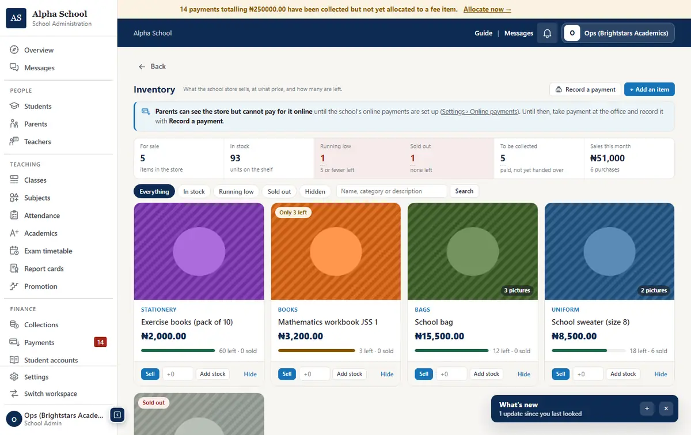
A real screen from the demonstration school. All names and figures are sample data.
3
pictures per item
Auto
stock count after every sale
SMS
to parents when an item is collected
What you can do
Inventory cards with price, category, description, up to three pictures, stock left and number sold.
Low stock and sold out are flagged. Add stock with one click, or correct a miscount.
Hide an item from parents without losing its sales history.
Sell at the counter: cash, transfer or POS. Stock goes down instantly and a store receipt is issued.
Parents shop online for any of their children, paying through Paystack where the school accepts it.
Purchase claims: everything bought and waiting to be collected, then Hand over records who collected it.
Parents texted with what was collected and by whom.
Sales on the Overview: this month against last, weekly sales and best sellers.
Example
Mrs Ojo buys two school sweaters (size 8) for her twins online. The store keeper sees the claim, hands them to the twins at closing time, and Mrs Ojo gets a text saying what was collected, and by whom.
Who uses it
Store KeeperBursarParents
Why it matters
Store sales stop being cash in a drawer. You know what you sold, to whom, and what's left.
BRIGHTSTARS ACADEMICS · SCHOOL PLATFORM GUIDE42
Brightstars AcademicsFeatures · 21
Feature 21 · Resources
The library
Every book, every copy, every loan: who has what, and what's overdue.
yourschool · demo data
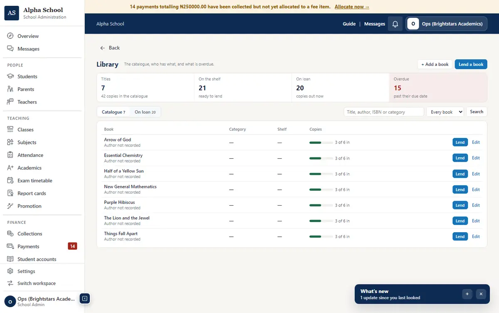
A real screen from the demonstration school. All names and figures are sample data.
4
figures: titles, on shelf, on loan, overdue
Auto
due dates from the loan length
Days late
shown on every overdue loan
What you can do
Catalogue: title, author, ISBN, category and how many copies the school owns.
Four figures: titles, copies on the shelf, copies on loan, and overdue.
Lend in seconds to a student, found as you type, or a member of staff. The due date is set automatically from the loan length.
On loan view, with overdue loans first, each marked with how many days late.
One-click return puts the copy back on the shelf.
Add or remove copies as books are bought, lost or damaged. Copies out on loan are always counted separately.
A book can't be archived while a copy is still out.
Example
The librarian lends Things Fall Apart to 30 SSS 2 students for two weeks. Three weeks later, the On loan tab shows four copies overdue by seven days, with the borrowers' names.
Who uses it
LibrarianSchool Admin
Why it matters
Books stop disappearing, and the library becomes an asset you can actually manage.
BRIGHTSTARS ACADEMICS · SCHOOL PLATFORM GUIDE43
Brightstars AcademicsFeatures · 22
Feature 22 · Communication
Messages, notifications and reminders
Every conversation and every automatic notice in one place, so parents hear from the school before they think to ask.
7
kinds of automatic notice to families
3
states: open, in progress, resolved
2 days
birthday notice to teachers
How it works, step by step
1Connect your school's email and SMS once.
2Work as normal: set work, bill, record payments, release.
3Families are told automatically, in your name.
4Check any family's notice log when someone asks.
What you can do
Staff inbox: private messages between colleagues, with file attachments. Parents and students never see it.
Parent conversations are marked Open, In progress or Resolved, with unanswered ones listed first. I'll respond shows who's handling each one.
Start a conversation with any student's parent. The parent is told by email and SMS and replies from their portal.
Automatic notices go out when work is set or marked, a fee is charged, a payment is recorded, a report card is ready, a timetable is released, and a store item is paid for or collected.
Notification bell for staff alerts.
Birthday reminders: two days before a student's birthday, their teachers get a reminder.
Notice log: every email and text the school tried to send, and whether it arrived.
Example
A reminder pops up for Mr Ola: Ada Obi (JSS 1) turns 12 on Fri 11 Oct. On Friday his class sings for her. Her mother, who never knew the school tracked birthdays, mentions it at the next PTA meeting.
Who uses it
All staffParents
Why it matters
Communication becomes reliable and recorded, and the small touches make families feel known.
BRIGHTSTARS ACADEMICS · SCHOOL PLATFORM GUIDE44
Brightstars AcademicsFeatures · 23
Feature 23 · Running the school
Staff accounts
Everyone who works at your school gets their own account, on a card that says in plain words what they can reach.
yourschool · demo data
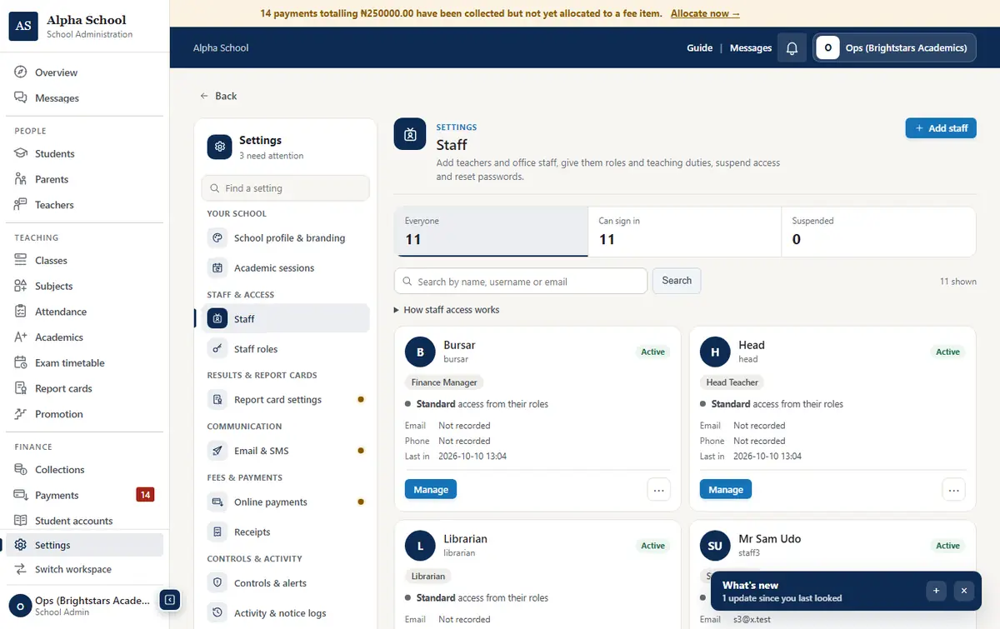
A real screen from the demonstration school. All names and figures are sample data.
Instant
suspension, even mid-session
0
passwords anyone can look up
Plain words
summary of each person's access
What you can do
Staff cards: name, username, active or suspended, roles, contact details, last sign-in and a plain-English summary of their access.
Filters and search by everyone, can sign in or suspended, or by name, username and email.
One staff form with tabs: Profile, Roles, Teaching duties and Limits, plus Overrides for the School Admin.
Suspend instantly. A suspended person's sign-in stops immediately, and their record stays.
Reset a password to a new one-time password, shown once and ready to print. Nobody, not even the School Admin, can see anyone's password.
Signatures and photos for every staff member.
Who's online now: see which staff, students and parents are signed in.
Example
A teacher resigns on Friday afternoon. The School Admin opens her card, chooses Suspend, and her access ends that second, while every mark she ever entered stays on record, with her name beside it.
Who uses it
School Admin
Why it matters
You control exactly who can get in, and you can shut a door instantly when someone leaves.
BRIGHTSTARS ACADEMICS · SCHOOL PLATFORM GUIDE45
Brightstars AcademicsFeatures · 24
Feature 24 · Running the school
Roles, permissions and limits
Instead of 'admin' and 'not admin', every job in your school gets exactly the access it needs, and nothing more.
yourschool · demo data
A real screen from the demonstration school. All names and figures are sample data.
19
ready-made roles
100+
individual permissions
4
areas reserved for the School Admin
What you can do
19 ready-made roles, among them Head Teacher, Class Teacher, Subject Teacher, Finance Manager, Admissions Officer, Librarian, Store Keeper, Report Card Officer and Secretary.
Over 100 individual permissions, grouped by area: view students, release results, record payments, release timetables and more.
Build your own role by ticking permissions, with search and Tick all per area.
A chain of authority: Proprietor, then executive and office staff, head teacher, class teacher and subject teacher.
Limits: keep anyone to chosen classes, subjects, sessions or question banks, such as a Nursery head limited to Crèche and Nursery.
Overrides for a single exception, without inventing a new role.
Four areas only the School Admin can touch: staff and roles, Email and SMS, online payments, and the school profile.
Example
The school wants a cashier who can record payments but must never see school-wide balances. The School Admin gives her a role that can record payments but not view school-wide finance. She records payments all day, and only ever sees her own takings.
Who uses it
School Admin
Why it matters
Fewer mistakes, less temptation, and a clear answer to 'who could have done this?'
BRIGHTSTARS ACADEMICS · SCHOOL PLATFORM GUIDE46
Brightstars AcademicsFeatures · 25
Feature 25 · Running the school
Settings, branding and connections
One calm Settings area for everything that shapes your portal, with a 'Worth a look' list that tells you what still needs attention.
yourschool · demo data
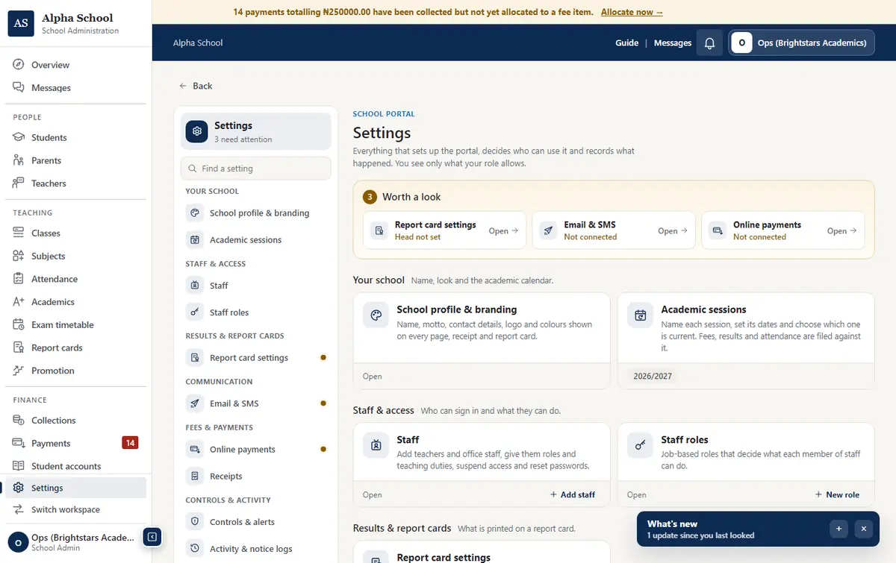
A real screen from the demonstration school. All names and figures are sample data.
2
brand colours, checked for readability
8
sign-in photographs
Test
buttons for email and SMS
What you can do
Worth a look: anything unfinished, such as online payments not connected, the head's signature missing or alerts left open.
Find a setting as you type. Each setting shows its state at a glance.
School profile: name, motto, tagline, contacts, logo, two brand colours with a readability check, and up to eight sign-in photographs.
Email and SMS: connect your own mail server and BulkSMS Nigeria account, with a test button for each.
Receipts and report cards: authorised signature, receipt prefix, the head's title and signature, and how CA and exam are weighted.
Controls and alerts: alerts, unread messages, a review queue of things raised automatically, and locks on subjects and question banks.
Academic sessions and class subdivisions are set here too.
Example
A new School Admin opens Settings for the first time. Worth a look shows three items. Twenty minutes later the head's signature is uploaded, SMS is connected and tested, and Paystack is linked.
Who uses it
School AdminHead teacher
Why it matters
Setup is guided, not guessed, and nothing important stays half-done without someone noticing.
BRIGHTSTARS ACADEMICS · SCHOOL PLATFORM GUIDE47
Brightstars AcademicsFeatures · 26
Feature 26 · Running the school
Activity and notice logs
A complete, searchable diary of who did what in your portal, and of every message sent to a family.
yourschool · demo data
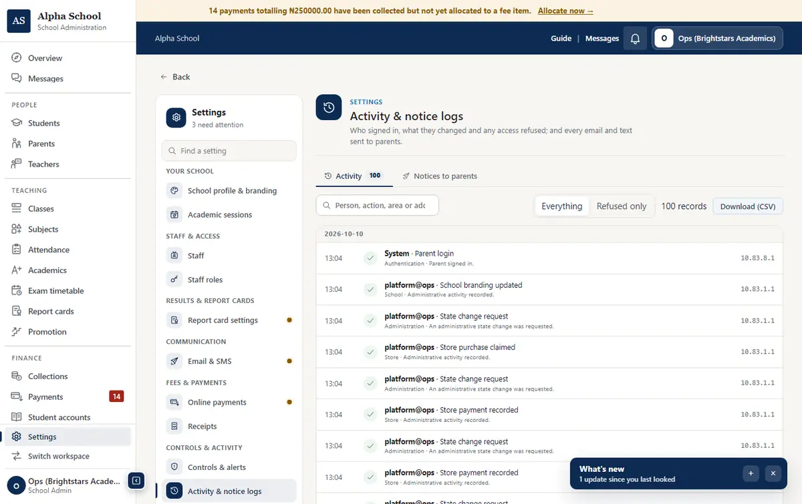
A real screen from the demonstration school. All names and figures are sample data.
Every
sign-in, change and refusal
50
records a page, searchable across all
CSV
download of the whole log
What you can do
Activity log: who did it, what they did, to which record, from which internet address, and whether it was allowed.
Refused attempts are recorded too, such as someone trying to open a page their role doesn't allow.
Notices to parents: every email and text the school tried to send, and whether it got through.
Search everything: a person, an action, a student, an email address or a phone number.
Refused only and Not delivered filters show just what went wrong.
Fifty at a time, newest first and grouped by day, with Older and Newer to page through.
Download the activity log as a spreadsheet.
Example
A parent insists her son's Mathematics mark changed after release. The head searches the log for the student: the mark was entered by Mr Tunde on 2 March, approved on 4 March, released on 5 March, and never touched again.
Who uses it
School AdminHead teacher
Why it matters
Disputes are settled with facts, not memories, and staff know their actions are on record.
BRIGHTSTARS ACADEMICS · SCHOOL PLATFORM GUIDE48
Brightstars AcademicsFeatures · 27
Feature 27 · Entrance examination
Candidates and credentials
Register every applicant, print their exam login slips, and follow each one from registration to admission.
1 min
to register a candidate
Batch
printing of login slips
Your
own candidate-code pattern
How it works, step by step
1Register each candidate and their target class.
2Print the login slips in one batch.
3Hand out slips with the exam date.
4Reset a lost slip's password in seconds.
What you can do
Register candidates with their target class (Year 7/JSS 1 or SSS 1), guardian contacts and photo. Each gets a candidate code using your school's own pattern.
Print credentials: neat login slips with the candidate code and password, one or many at a time.
Reset a candidate's password if a slip is lost.
SSS departments: SSS 1 candidates choose Science, Art or Commercial when registering.
A candidate's own page shows their papers, scores, department breakdown and admission status.
Result image: a single branded picture of the candidate's overall result, ready to share.
Retakes granted by authorised staff, one paper at a time.
Example
On registration day, 180 families queue. The admissions officer registers each child in under a minute, prints all 180 login slips in one go, and hands them out with the exam date.
Who uses it
Admissions officerEntrance Examination Manager
Why it matters
Admissions season runs like a well-organised office, with no handwritten lists.
BRIGHTSTARS ACADEMICS · SCHOOL PLATFORM GUIDE49
Brightstars AcademicsFeatures · 28
Feature 28 · Entrance examination
Question banks and entrance practice
Start with 255 ready-made entrance questions, add your own, and give families a free practice page that brings them to your school.
255
standard entrance questions included
6
starter banks, Year 7 and SSS 1
0
sign-ups needed to practise
How it works, step by step
1Start with the standard banks, or import your own.
2Set up the live papers in one click.
3Lock the banks while the exam runs.
4Share your practice link on social media and your website.
What you can do
Standard banks included: Mathematics, English and General Knowledge for Year 7/JSS 1 and SSS 1, written for the platform and independently checked.
Bring your own questions: import a file, or write questions with pictures and instructions.
Reorder, edit and export a bank to keep a copy outside the portal.
Department tags for SSS questions, so every candidate gets a fair share from Science, Art and Commercial.
Exam configuration: choose which bank is the live paper for each class and subject, in one click for the standard set.
Lock a bank during a live exam so nobody can change it mid-way.
Public entrance practice: anyone can practise with no sign-up, using last year's paper or a practice bank. The upcoming paper is never shown.
Example
A father in Lagos finds your school's practice link on Instagram. His daughter tries the JSS 1 Mathematics practice paper that evening, sees your crest and colours throughout, and registers for the real exam the next morning.
Who uses it
Entrance Examination ManagerQuestion Bank ManagerFamilies
Why it matters
You can run an entrance exam on day one, and the practice page markets your school to every family that tries it.
BRIGHTSTARS ACADEMICS · SCHOOL PLATFORM GUIDE50
Brightstars AcademicsFeatures · 29
Feature 29 · Entrance examination
Exam day, results and rankings
Candidates sit timed papers on any computer. When the last one finishes, every script is marked, every candidate ranked, and the results are ready to export.
3
papers, any order, each timed
5 min
most time given back after an outage
4
results views, exportable
How it works, step by step
1Candidates sign in with their slips.
2They sit three timed papers in any order.
3Every script is marked the moment it ends.
4Export the rankings for your board the same day.
What you can do
Three papers, any order, each with its own timer, and each taken once unless a retake is granted.
One question at a time, with a question map, a server-kept clock and answers saved on Save & Next.
Power cut protection: if a candidate's connection drops, the clock gives back the lost time, up to five minutes.
Results in four tabs: By subject, Summary (printable), Rankings and Examination activity.
Rankings: every candidate ordered by overall score, exportable as a spreadsheet.
Examination activity: a plain record of every paper started, by whom, when and what happened, for checking a single sitting.
Results stay private until the school releases them.
Example
On Saturday at 9am, 180 candidates sit three papers across two computer rooms. At 12:40 the last paper is submitted. At 12:41 the admissions officer exports the rankings to share with the board.
The admissions decision is ready the same afternoon, not three weeks later.
BRIGHTSTARS ACADEMICS · SCHOOL PLATFORM GUIDE51
Brightstars AcademicsFeatures · 30
Feature 30 · Entrance examination
Admissions and department advice
A ranked waitlist and a single click turn a successful candidate into an enrolled student, and the platform even suggests the best SSS department.
1 click
from candidate to enrolled student
3
departments compared for SSS
Undo
for declines, any time
How it works, step by step
1Open the waitlist, ranked by score.
2Check the department advice for SSS candidates.
3Admit, choosing the class and department.
4Release the result, and the family sees the new login.
What you can do
Ranked waitlist of everyone who sat at least one paper, filterable by entry level and decision.
Department advice for SSS: how each candidate did on Science, Art and Commercial questions, with a suggested department and the reason.
Your choice wins: the suggestion is only a suggestion. Choose any department before confirming.
One-click admit: creates the student record, a class place (balanced across arms), the admission number, a login and, optionally, the parent account.
Decline with a reason, and undo it at any time.
Release to the candidate: once released, the candidate sees the decision, their score and their new student login.
One permission decides: only Admissions Officers see the waitlist by default, and can be limited to one entry level.
Example
Bisi chose Art, but scored 81% on the Science questions against 58% on Art. The waitlist shows Suggest Science with the reasons. The principal discusses it with her parents, who agree, and she is admitted into SS 1A (Science).
Who uses it
Admissions officerPrincipal
Why it matters
Fair, explainable admissions, and a new family fully set up in the portal before they leave the office.
BRIGHTSTARS ACADEMICS · SCHOOL PLATFORM GUIDE52
Brightstars AcademicsFeatures · 31
Feature 31 · Portals
The student portal
Everything a student needs for school, on their phone or a computer, in your school's colours.
6
menu areas: home, tests, exams, practice, timetable, attendance
∞
practice attempts
Phone
menu bar along the bottom
How it works, step by step
1The school creates the student's account.
2The student signs in and chooses a password.
3They install the portal on their phone.
4Work, tests, practice and results are all in one place.
What you can do
Home: their work and results at a glance, plus what's new.
Assignments and projects with due dates, status and scores side by side.
Tests and examinations listed with their number of questions and minutes, and an Open button.
Practice as often as they like, in a new order every time, never counted.
Exam timetable for their own class, as a PDF.
Attendance history and term summary.
Results and report cards, once released, ready to download.
A phone-friendly menu along the bottom, and the timer only starts when they begin.
Example
Before her Biology test, Amaka takes the Biology practice test four times on the bus. Each time the questions come in a different order. On test day she scores 88%, and the practice attempts were never recorded.
Who uses it
Students (Primary 1 and up)
Why it matters
Students take ownership of their learning, and practice without fear of it counting against them.
BRIGHTSTARS ACADEMICS · SCHOOL PLATFORM GUIDE53
Brightstars AcademicsFeatures · 32
Feature 32 · Portals
The parent portal
Every child, every fee, every result and every message, on the parent's phone.
All
children in one table
Online
payment for any amount owed
Kept
access after a child leaves
How it works, step by step
1The school links the parent to their children.
2The parent signs in and chooses a password.
3They install the portal as an app.
4Fees, results, messages and the store, any time.
What you can do
All children in one table: what each owes, their average and their progress, with Profile, Message and Pay beside each name.
Fee account by session: charges, payments, receipts to download, and the balance, including other sessions.
Pay online for one fee or several, for any child.
Results and report cards the moment they're released.
Attendance and the exam timetable in a pop-up from the child's page.
Messages with the school, with replies from named staff.
The store: browse, buy and track collection.
A child who has left stays visible to parents, with their records and fee account.
Example
Mr Danjuma works in Abuja while his children school in Jos. He checks their attendance on Monday, pays Second Term fees on Wednesday, and downloads their report cards in April, without a single trip or phone call.
Who uses it
Parents and guardians
Why it matters
Parents feel close to their children's schooling, and that confidence is why families stay and recommend you.
BRIGHTSTARS ACADEMICS · SCHOOL PLATFORM GUIDE54
Brightstars AcademicsFeatures · 33
Feature 33 · Portals
The candidate portal
Entrance candidates get a simple portal of their own: their papers, their timer, and, once the school releases it, their result and new student login.
3
papers with their own timers
Private
results until the school releases them
Instant
student login on admission
How it works, step by step
1Get a login slip at registration.
2Sign in on exam day.
3Sit the three papers.
4Sign in again later to see the decision and the new student login.
What you can do
Sign in with the candidate code on their printed slip.
See their three papers, each marked Start, Resume or Completed.
Take papers in any order, each with its own timer, once each.
Retakes appear automatically when the school grants one.
Results withheld until release. The candidate sees 'The school will provide your result' until the school says otherwise.
Admitted? The candidate sees the congratulations, their score, and their new student login and one-time password.
Example
Two weeks after the exam, Chidi signs back in with his candidate code and sees Congratulations, you have been admitted, with his new student login underneath. He signs in as a JSS 1 student the same evening.
Who uses it
Entrance candidates and their families
Why it matters
The applicant's very first experience of your school is modern, clear and fair.
BRIGHTSTARS ACADEMICS · SCHOOL PLATFORM GUIDE55
Brightstars AcademicsFeatures · 34
Feature 34 · Support
Help built in
Your staff are never left guessing. The portal explains itself, announces its own improvements and walks new schools through setup.
16
guide pages with real screen pictures
Search
across every page, not just titles
3
audiences for What's new
How it works, step by step
1Open Guide in the top bar.
2Search a word, or browse by area.
3Follow a link straight to the real page.
4Read What's new when the portal improves.
What you can do
Staff guide inside the portal: plain-language pages with pictures of the real screens, grouped by Getting started, Academics, Finance and families, Running the school, and Entrance.
Search the guide: type 'receipt' or 'attendance' to search every page, not just titles.
Links to the real pages, so you never have to guess where a button is.
What's new: each improvement explained in plain words to staff, parents and students, each seeing only what concerns them.
Set up your school checklist: review classes, add subjects, enrol students, set up fees, then optional steps such as the library and store.
The version you're running is shown on the sign-in page.
Example
A new bursar joins mid-term. Instead of a week of shadowing, she reads the Finance pages of the guide on her first morning, with pictures of each screen, and records her first payment before lunch.
Who uses it
All staffParentsStudents
Why it matters
Less training time and fewer support calls. New staff are productive from their first day.
BRIGHTSTARS ACADEMICS · SCHOOL PLATFORM GUIDE56
Part three · In depth
Security made simple.
How Brightstars protects your school, your children's information and your money, explained without jargon, with an everyday comparison and an example for every safeguard.
01Security at a glance58
02Every school is its own house59
03Passwords and signing in60
04Only the right people see the right things61
05A record of everything62
06Exams that can't be gamed63
07Money you can trust64
08Children's photos and files65
09Your messages and secret keys66
10Safe in the browser and on shared devices67
11Our team and your data68
12Built not to lose your work69
13Security questions70
Brightstars AcademicsSecurity · at a glance
Security 01 · At a glance
Sixteen ways your school is protected.
The pages that follow explain each protection in everyday language, with an example from school life. Here they are on one page, for the busy proprietor.
Own database per school
Your records are never stored alongside another school's.
Own web address
Sign-ins from one school are rejected at another.
Scrambled passwords
Nobody can read a password, only reset it.
Guessing slowed
Paused after 8 wrong tries in 5 minutes.
100+ permissions
Each job sees only what it needs.
Admin-only areas
Staff, roles, payments and branding stay with the School Admin.
Activity log
Who, what, when and from where, refusals included.
Fair exams
Answers never reach the candidate's device.
Verified payments
Every online payment confirmed with Paystack.
Void, never delete
Corrections always leave a trail.
Guarded photos
Children's pictures only for staff, the child and their parents.
Encrypted secrets
Mail, SMS and Paystack keys sealed per school.
Nothing left on phones
The app never stores private pages.
No trackers
No ads, analytics or outside scripts.
Recorded support visits
Our team's visits appear in your log.
NDPR-aligned
Written to align with Nigeria's Data Protection Act 2023.
Security isn't an extra. It's how the platform is built.
None of this costs extra or needs switching on. Every school gets every protection from the moment it's created.
BRIGHTSTARS ACADEMICS · SCHOOL PLATFORM GUIDE58
Brightstars AcademicsSecurity · 02
Security 02
Every school is its own house
Many school systems put every school's records in one big shared database and rely on a label to keep them apart. One mistake in the software, and one school can see another's children. Brightstars is built the other way round.
Think of it like this: A block of flats vs. separate houses
In a shared system, every school lives in one block of flats. The doors are locked, but they open onto the same corridor. With Brightstars, every school gets its own house on its own plot, with its own front door, its own keys and its own filing cabinets. There is no shared corridor to wander down.
1
private database per school
1
private file folder per school
0
shared corridors between schools
How it protects your school
A private database for each school. Your students, results, fees and messages are stored in a database that belongs to your school alone.
A private folder for each school's files: photographs, signatures, question pictures and logos.
Your own web address. The portal works out which school you are from the address you visit, and never from anything a user types.
Keys don't work next door. A sign-in issued by one school's portal is rejected if it's ever presented at another school's.
It stops rather than guesses. If the system can't be certain which school a request belongs to, it refuses it. It never falls back to a default.
Unknown addresses go nowhere. An address that isn't a registered school gets a 'not found' page before any school data is touched.
Example
Two schools on the platform both have a JSS 1 student called Ada Obi. They are two different children in two different databases, and there is no screen, search or mistake that could show one school the other Ada's results.
BRIGHTSTARS ACADEMICS · SCHOOL PLATFORM GUIDE59
Brightstars AcademicsSecurity · 03
Security 03
Passwords and signing in
Most break-ins start with a stolen or guessed password. These protections make that very hard.
Think of it like this: A blender, not a safe
We never keep your password. We put it through a one-way scrambler, like a blender. You can turn fruit into a smoothie, but you can't turn the smoothie back into fruit. When you sign in, we blend what you typed and compare the two smoothies. Even our own team can't read a password back.
8
wrong tries in 5 minutes pause sign-in
30 min
lifetime of a single-use reset link
All
other devices signed out on a password change
How it protects your school
Passwords are scrambled one way and never stored in readable form. Nobody, not the School Admin and not Brightstars staff, can look one up. They can only reset it.
Every account starts on a one-time password that must be changed at first sign-in, before anything else opens.
Guessing is slowed down. After eight wrong tries within five minutes, that sign-in is paused for a while. Password-reset requests are limited too.
Reset links are sent only to the email on file, work once, expire after 30 minutes, and cancel any earlier link.
No hints for snoopers. 'Forgot password' gives the same reply whether or not an account exists.
Changing a password signs out every other device at once, such as a phone left at home or a laptop in the staff room.
Suspended staff and archived students are stopped immediately, even if they were already signed in.
Example
A teacher's phone is stolen with the portal signed in. She borrows a colleague's phone, changes her password, and the thief's session ends at that moment, before they can open a single record.
BRIGHTSTARS ACADEMICS · SCHOOL PLATFORM GUIDE60
Brightstars AcademicsSecurity · 04
Security 04
Only the right people see the right things
Most school data leaks aren't hackers. They're the wrong person inside the school seeing something they shouldn't. Brightstars gives every person access to exactly their job, and nothing more.
Think of it like this: Keys on a key ring
A caretaker's key ring opens the store room, not the bursar's safe. Each role in Brightstars is a key ring. The Subject Teacher ring opens marks for their own subjects in their own classes. It doesn't open fees, admissions or anyone else's class.
100+
separate permissions
4
areas only the School Admin controls
0
ways to grant yourself more access
How it protects your school
Over 100 separate permissions instead of a single 'admin' switch. Viewing the admissions waitlist and deciding admissions are even two different permissions.
Teaching duties narrow every screen. A teacher only sees the students, subjects and marks of the classes they teach.
Parents see only their own children. Students see only themselves.
Nobody can promote themselves. Staff, roles, Email and SMS, online payments and the school profile are for the School Admin alone, and can never be handed to another role.
Two workspaces kept apart. Someone working in the entrance exam can't wander into school records by accident, and an attempt is logged.
Private until released. Results, report cards, timetables and candidate outcomes stay invisible to families until a person with the right permission releases them.
Cashiers see only what they recorded, not the school's whole financial position.
Example
A new subject teacher for JSS 2 Mathematics signs in. She can enter JSS 2 Maths marks and set Maths work, and that's all. The fees page, other classes' results and the admissions list simply aren't there for her.
BRIGHTSTARS ACADEMICS · SCHOOL PLATFORM GUIDE61
Brightstars AcademicsSecurity · 05
Security 05
A record of everything
When something goes wrong, the first question is always 'who did this?'. Brightstars can always answer it.
Think of it like this: CCTV for your records
The activity log works like a CCTV camera pointed at your records, except it doesn't need rewinding. Search a name or a student and see every action, by whom, when and from which internet connection, including people who tried a door that was locked.
yourschool · demo data
A real activity log from the demonstration school. Platform support visits appear as platform@ops.
Who
what, when and from which address
Refusals
recorded, not just successes
CSV
export for your records
How it protects your school
Every important action is recorded: sign-ins, record changes, releases, payments, voids, imports and account changes.
Refused attempts are recorded too, so you can see who tried to open what they shouldn't.
Who wrote it: report card comments and trait ratings carry the name of whoever last changed them.
Money is never erased. A wrong payment is voided with a reason, and both the payment and the void stay visible.
Every message to families is logged with whether it was delivered.
Searchable and downloadable: find any person, action or student, and export the log as a spreadsheet.
Example
₦40,000 seems to be missing from March's takings. The log shows the payment was voided on 14 March by the cashier, with the reason 'entered twice'. The duplicate is right there with the same receipt reference. Mystery solved in two minutes.
BRIGHTSTARS ACADEMICS · SCHOOL PLATFORM GUIDE62
Brightstars AcademicsSecurity · 06
Security 06
Exams that can't be gamed
An entrance exam or end-of-term paper is only worth something if it's fair. Brightstars closes the usual loopholes.
Think of it like this: The answers stay in the examiner's office
In a paper exam, the marking scheme never leaves the examiner's office. Brightstars works the same way. The correct answers never travel to the candidate's computer. There's nothing on the screen, in the page or in the browser for a clever student to dig out. Marking happens on our side.
0
answer keys sent to the candidate's device
5 min
maximum outage allowance
1
attempt per paper unless staff grant a retake
How it protects your school
Correct answers never reach the candidate's device, and exam pages are never stored by the browser.
The clock is kept by the system, not the candidate's computer. Changing the computer's time does nothing, and time up means the paper is submitted automatically.
Fair allowance for power cuts: time lost to a real outage is given back, but never more than five minutes in total, so a deliberate disconnection can't buy a long break.
Questions in a different order for each candidate, so copying a neighbour doesn't help.
Each paper once. A retake has to be granted by staff, and the grant is recorded.
Frozen papers: each attempt keeps its own copy of the questions, and banks can be locked during a live exam.
Practice never leaks the real paper. Practice uses last year's paper or a practice bank, never the paper about to be sat.
Results stay private until the school releases them.
Example
A candidate sets the computer's clock back by half an hour, hoping for extra time. Nothing changes. His time left comes from Brightstars, not from the computer, and when it reaches zero the paper is submitted automatically, already marked.
BRIGHTSTARS ACADEMICS · SCHOOL PLATFORM GUIDE63
Brightstars AcademicsSecurity · 07
Security 07
Money you can trust
School fees are the lifeblood of a private school. Every naira is protected from mistakes, duplicates and tampering.
Think of it like this: Ask the bank, not the customer
When a customer says 'I've paid', a careful shopkeeper checks with the bank. Brightstars does the same. Every online payment is confirmed by asking Paystack directly, never just because a phone or browser says it went through.
1
charge, however many times Pay is pressed
Verified
with Paystack, every time
0
payments silently deleted
How it protects your school
Straight to your account. Online payments go to your school's own Paystack account. There's no platform middleman holding your money.
Confirmed with Paystack itself before anything is recorded, and even if the parent closes their phone mid-payment.
Double-tap safe. Pressing Pay twice, or a slow network repeating a request, never creates a second charge or a second record.
Refunds marked only when real: a refund is recorded only once Paystack confirms the money actually went back.
Void, never delete: corrections leave a trail.
Unapplied money is impossible to ignore: a banner stays on every finance page until every payment is matched to a fee.
Billing can't double-charge: re-running a class bill skips anyone already charged.
Your payment keys are encrypted and never shown again once saved.
Example
A parent on a weak 3G connection presses Pay, sees nothing happen, and presses again. Brightstars recognises the second press as the same payment and takes her back to the same Paystack checkout. She's charged once, and the bursar sees one payment.
BRIGHTSTARS ACADEMICS · SCHOOL PLATFORM GUIDE64
Brightstars AcademicsSecurity · 08
Security 08
Children's photos and files
Photographs of children are some of the most sensitive things a school holds. Every uploaded file has a rule about who may open it, checked every single time.
Think of it like this: A guest list at the door
Every folder of files has its own guest list. A student's photograph lets in staff, that student and their linked parent, and nobody else. The list is checked at the door on every visit, not once at the start.
20
random characters in every file name
5 MB
upload limit, images only
Every
visit checked against the guest list
How it protects your school
Student photos: staff, the student and their linked parents only.
Staff photos and signatures: staff only.
Candidate photos: staff and that candidate only.
Message attachments only through a permission-checked download.
Unguessable file names: every file name ends in 20 random characters, so nobody can guess their way to a picture.
Only pictures, only reasonable sizes: uploads are checked for type (PNG, JPG, GIF, WEBP) and size, before and after sending.
Kept in your school's own folder, never a shared one.
Example
A curious student copies the web address of his own photo and changes a few letters, hoping to see a classmate's. He gets nothing. The names can't be guessed, and even a correct one would be refused because it isn't his.
BRIGHTSTARS ACADEMICS · SCHOOL PLATFORM GUIDE65
Brightstars AcademicsSecurity · 09
Security 09
Your messages and secret keys
Your school's email password, SMS token and Paystack key are the keys to sending messages and taking money in your name. They're locked away accordingly.
Think of it like this: A sealed envelope only your school can open
Each school's secret keys are sealed in an envelope that only that school's own key can open. Even a full copy of the database would just be a pile of sealed envelopes, useless to anyone who found it.
Sealed
per school, under its own key
0
times a saved secret is shown again
Verified
mail-server certificates
How it protects your school
Encrypted before they're stored, under a key specific to your school.
Never shown again once saved, and never written to logs. The log only records which settings changed.
Messages come from you. Email and SMS go out from your school's own accounts, so parents recognise the sender.
No borrowing: once your school starts setting up its own mail, it never quietly sends through someone else's.
Your mail settings can't be used to attack us. The mail server address is checked so it can't point inside the platform's own network.
Certificates checked: connections to mail servers are verified, so messages can't be intercepted by an impostor server.
Short texts: an SMS carries a short notice and never a child's results.
Example
Your bursar leaves on bad terms. She saw the Paystack dashboard once, but she never saw your secret key in the portal, because after it was saved nobody could see it again. Only the School Admin can change it.
BRIGHTSTARS ACADEMICS · SCHOOL PLATFORM GUIDE66
Brightstars AcademicsSecurity · 10
Security 10
Safe in the browser and on shared devices
Parents use family phones. Students use school computers. Brightstars is careful about what it leaves behind, and about the tricks websites use against each other.
Think of it like this: A visitor who wipes their feet
On a shared computer, Brightstars behaves like a polite visitor. It uses one sign-in cookie, keeps no copies of private pages on the device, and carries no advertising trackers.
1
cookie, no trackers
0
outside scripts or ads
0
private pages kept on the device
How it protects your school
Encrypted connection (HTTPS) for everything sent between the device and the portal.
One cookie, no tracking: a single signed sign-in cookie that scripts on the page can't read. No ads, no analytics and no third-party trackers, on any page.
Nothing loaded from outside: the portal refuses to run scripts from other websites.
Can't be disguised inside another site. The portal refuses to be embedded in someone else's page, which stops fake look-alike screens.
Forged clicks blocked. Every form carries a secret token, so another website can't make your browser submit something in your name.
The app keeps nothing private on the phone. The installed app stores only styles and fonts for speed, never pages you were signed in to.
A system update signs everyone out, except candidates and students in the middle of an exam, who carry on undisturbed.
Example
A parent checks her son's results on a cyber-café computer and forgets to sign out. The next customer presses Back. There's no stored copy of the results page for the browser to show, and the sign-in ends when the browser is closed.
BRIGHTSTARS ACADEMICS · SCHOOL PLATFORM GUIDE67
Brightstars AcademicsSecurity · 11
Security 11
Our team and your data
Trust also means being clear about what we, the platform provider, can and cannot do with your school's information.
Think of it like this: A visitors' book at your gate
When our support team needs to help inside your portal, they come through a signed visitors' book. Each visit uses a one-time pass that expires quickly, and every visit and every action is written into your school's own activity log under their name.
1-time
entry passes for support visits
Both
sides record every visit
Never
sold or shared
How it protects your school
You own your data. Your school decides what is collected and why. We store and process it for you, and never sell it, share it with other schools or use it for anything else.
Support visits are recorded on both sides: our own log, and your school's activity log, under names such as platform@ops.
One-time, short-lived entry passes. Our staff can't simply sign in to your portal with a password.
Leavers are locked out everywhere at once. When we remove a member of our team, their access to every school ends immediately.
Deleting a school is a separate, rarely granted power, and a full export is normally taken first.
Pausing isn't deleting. A suspended school's data is untouched, and it returns exactly as it was.
Your data, exportable: a complete copy of your school's records and files can be produced on request.
Written to align with Nigeria's Data Protection Act 2023 and the NDPR, with a published privacy statement linked from your sign-in page.
Example
Your head teacher wonders whether Brightstars has been looking around. She opens the activity log and searches 'platform'. Every support visit is there, with the date, time and every action taken, which matches the support ticket she raised last month.
BRIGHTSTARS ACADEMICS · SCHOOL PLATFORM GUIDE68
Brightstars AcademicsSecurity · 12
Security 12
Built not to lose your work
Security also means your work is still there tomorrow. A lot of quiet engineering makes sure that power cuts, poor networks and double clicks don't cost you anything.
Think of it like this: A post office that keeps a copy
When the portal needs to send a receipt or a notice, it first writes it into a logbook, then sends it. If the power goes mid-send, the logbook still has it, and it's sent again later. Nothing just vanishes.
Retried
notices after a power cut
0
duplicates from a double click
Fresh
totals, worked out every time
How it protects your school
Notices are queued and retried. Receipts, report card alerts and timetable notices survive a restart and are retried rather than lost.
A failed message never undoes your work. If an email fails, the payment is still recorded.
No duplicates from double clicks on important forms, such as payments.
Exams survive restarts. A candidate mid-paper carries on where they were.
Archive, never delete, for students who leave. Marked work can't be deleted, and deleted unmarked work can be restored.
Totals that can't drift. Results and report cards are always worked out fresh from the marks on record, so they always agree.
Checked imports: spreadsheets are checked before anything is written, and re-running one never doubles records.
Example
NEPA takes the power at the exact moment the bursar records a payment. When it returns, the payment is there, the receipt email is still waiting in the queue, and it goes out on the next attempt. The parent receives it, slightly late, but it arrives.
BRIGHTSTARS ACADEMICS · SCHOOL PLATFORM GUIDE69
Brightstars AcademicsSecurity · questions
Security 13 · Questions
What proprietors ask us about safety.
Can Brightstars staff see our school's records?
Only by entering your portal through a one-time, recorded entry pass, usually to help you with a support request. Every visit and every action appears in your own activity log.
What happens when a teacher leaves?
Suspend their account and their access ends that second, even on a device that was already signed in. Their past work stays on record with their name.
A parent lost their phone. What now?
Reset their password. Every device signed in with the old password is signed out immediately.
Could someone guess passwords?
Repeated wrong guesses are paused after eight tries in five minutes, and every account starts with a one-time password that must be changed.
Can another school ever see our data?
No. Your school has its own database and files, and sign-ins from one school are rejected at another.
Do you sell or share our data?
Never. We act only as your processor. Your school owns and controls its records.
Can we get all our data out?
Yes. A complete export of your database and files can be produced at any time.
Are there adverts or trackers on our portal?
None. No ads, no analytics and no third-party scripts, for anyone, on any page.
What if the internet drops during an exam?
Answers already saved stay saved, the candidate carries on where they were, and up to five minutes of lost time is given back.
Who can change where our fees are paid?
Only the School Admin. It's not a permission that can be given to anyone else, not even the Finance Manager.
Want to go deeper?
Our full privacy and data-protection statement is linked from every school's sign-in page, and we're happy to walk your board or IT adviser through it.
Ask us →
BRIGHTSTARS ACADEMICS · SCHOOL PLATFORM GUIDE70
Next step
See it running for your school.
Tell us about your school and we'll show you a walkthrough of how it would look and feel, with your name, your colours and your classes. Your portal's address is live the moment your school is created.